Front Close Up of the drag queen from <IMAGE_1> in the kitchen environment from <IMAGE_0>. The drag queen, appearing exactly once, is positioned centrally in the frame in a tight close-up shot. He is staring directly forward at the camera with an intense, glaring look of authority. He holds his perfectly manicured hand near his face, with a single finger raised in a commanding gesture. He retains his exact appearance from <IMAGE_1>, including his orange-skinned, heavily made-up face, bright blonde hair framing his face, and his oversized gold sequined gown, with a warm afternoon sunlight glinting off his massive gold sequined shoulder pad visible at the bottom of the frame. In the background, the warm afternoon kitchen environment from <IMAGE_0> is softly blurred. Warm, direct afternoon sunlight hits his face and shoulder pad. The style is an IMAX photorealistic film still. Shot on ARRI Alexa 65 with IMAX 70mm film quality. Subject rendered with extreme crystal clarity, every detail hyper-defined and sharp. Photorealistic, high-fidelity texture. Ultra-sharp focus on subject, high micro-detail rendering. Freckles/skin pores visible, accurate skin texture, realistic fabric simulation. Massive dynamic range capture, deep shadows and bright highlights. Cinematic color science. Clean precise commercial color grade.
A tight, front close-up portrait of the drag queen from <IMAGE_1>, positioned centrally in the frame and placed within the kitchen environment from <IMAGE_0>. The subject retains his exact appearance from <IMAGE_1>, featuring the voluminous bright blonde hair framing his face, the orange-toned skin, heavy dramatic makeup with bold red lips and purple eyeshadow, and the oversized gold sequined gown. Only the lower portion of the gown and one massive gold sequined shoulder pad are visible at the bottom of the frame. He is staring directly forward at the camera with an intense, glaring look of authority. His perfectly manicured hand is held up near his face, with a single finger raised in a commanding, silencing gesture. The background features the bright, modern kitchen from <IMAGE_0>, including the white marble island, stainless steel refrigerator, and the doorway leading to the living room, but it is softly blurred with a shallow depth of field. Warm, direct afternoon sunlight streams into the room, hitting his face and glinting brilliantly off the gold sequins of his shoulder pad, casting deep, dramatic shadows that match the geometric light patterns of the original kitchen. The image is rendered as an IMAX photorealistic film still, shot on an ARRI Alexa 65 with IMAX 70mm film quality. The subject is captured with extreme crystal clarity and ultra-sharp focus, emphasizing high-fidelity textures like visible skin pores, freckles, accurate skin texture, and the realistic simulation of the sequined fabric. The lighting features a massive dynamic range with deep shadows and bright highlights, finished with a clean, precise commercial color grade and cinematic color science.

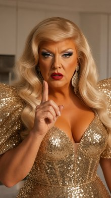
Front-Left Quarter View Medium Shot. In the center of the living room floor from <IMAGE_0> in the midground center, the curvy blonde woman from <IMAGE_1> stands with her torso facing the west hallway archway, her arms resting at her sides, looking toward the hallway. In the background near the kitchenette counter, the blue-haired blonde woman from <IMAGE_2> and the middle-aged South Asian man from <IMAGE_3> are standing. Near them, the young brown-haired woman from <IMAGE_4> is positioned. On the floor surface, a square white cardboard takeout container from prop_takeout_box lies with its lid open. The curvy blonde woman from <IMAGE_1> appears exactly once, retaining her exact appearance, blonde hair, and floor-length sequined crimson evening gown with padded architectural shoulders and crimson satin opera gloves. The blue-haired blonde woman from <IMAGE_2> appears exactly once, retaining her pastel pink denim bustier and white cargo trousers. The middle-aged South Asian man from <IMAGE_3> appears exactly once, retaining his neon green windbreaker and charcoal grey utility trousers. The young brown-haired woman from <IMAGE_4> appears exactly once, retaining her oversized black knit sweater and denim shorts. The living room environment from <IMAGE_0> is visible, showing the clear floor, kitchenette counter, and archway. Late afternoon daylight streams in from an unseen east window at 5000K color temperature, augmented by warm interior ceiling recessed fixtures operating at 3000K. This is an IMAX photorealistic film still. Shot on ARRI Alexa 65 with IMAX 70mm film quality. Subject rendered with extreme crystal clarity, every detail hyper-defined and sharp. Photorealistic, high-fidelity texture. Ultra-sharp focus on subject, high micro-detail rendering. Freckles/skin pores visible, accurate skin texture, realistic fabric simulation. Massive dynamic range capture, deep shadows and bright highlights. Cinematic color science. Clean precise commercial color grade.
xAI upsampler error 400: {"code":"invalid-argument","error":"Failed to start sampling: [input_too_large] The prompt is too long for this model's context window (10374 tokens > 8192 tokens)"}
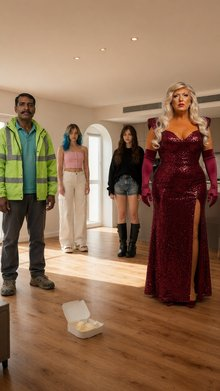
Back Medium Shot. In the center of the modern apartment living room from <IMAGE_0>, a fair-skinned blue-haired blonde woman from <IMAGE_1> stands in the middle of the room, her back turned to the camera as her torso faces the kitchenette. Her hands rest at her sides, and she is looking toward the kitchenette counter. In the background by the laminate counter, a middle-aged South Asian man with a mustache from <IMAGE_2> stands facing a young slender woman with brown hair from <IMAGE_3>. On the kitchenette counter surface in the background rests a square white cardboard takeout container from prop_takeout_box with its lid slightly ajar, showing its wire metal carrying handle and printed red Chinese characters. The scene is illuminated by late afternoon daylight streaming in from an unseen east window at 5000K, blended with warm ceiling recessed fixtures at 3000K. Captured as an IMAX photorealistic film still, shot on ARRI Alexa 65 with IMAX 70mm film quality, extreme crystal clarity, hyper-defined details, and cinematic color science.
xAI upsampler error 400: {"code":"invalid-argument","error":"Failed to start sampling: [input_too_large] The prompt is too long for this model's context window (8336 tokens > 8192 tokens)"}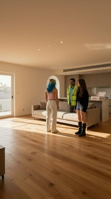
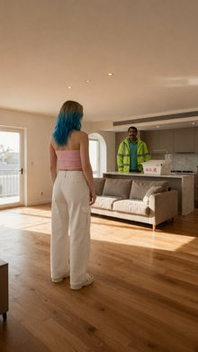
Front-Left Quarter View Medium Shot of the delivery man from <IMAGE_1> and the blonde woman from <IMAGE_2> standing at the laminate kitchenette counter from <IMAGE_0>. The delivery man from <IMAGE_1>, a middle-aged south asian man with a mustache, appears exactly once, standing in the midground center with his torso facing the blonde woman. He is holding a white cardboard takeout box from <IMAGE_0> on the counter surface with its lid ajar, looking frame-right towards her. The blonde woman from <IMAGE_2>, a fair-skinned blue-haired blonde woman, appears exactly once, standing opposite him with her arms crossed, looking frame-left towards him. The delivery man retains his exact appearance and wardrobe from <IMAGE_1>, including his high-visibility neon green waterproof windbreaker jacket with reflective silver safety stripes and faded turquoise cotton polo shirt. The blonde woman retains her exact appearance and wardrobe from <IMAGE_2>, including her strapless cropped pastel pink denim bustier and white cargo trousers. Only the midground kitchenette counter area from the east wall of <IMAGE_0> is visible, with the rest of the room's elements cropped out of the frame. Late afternoon daylight streams in from an unseen east window at 5000K color temperature, augmented by warm interior ceiling recessed fixtures operating at 3000K. Change the image style to an IMAX photorealistic film still. Shot on ARRI Alexa 65 with IMAX 70mm film quality. Subject rendered with extreme crystal clarity, every detail hyper-defined and sharp. Photorealistic, high-fidelity texture. Ultra-sharp focus on subject, high micro-detail rendering. Freckles/skin pores visible, accurate skin texture, realistic fabric simulation. Massive dynamic range capture, deep shadows and bright highlights. Cinematic color science. Clean precise commercial color grade.
A front-left quarter view medium shot, styled as an IMAX photorealistic film still shot on an ARRI Alexa 65 with 70mm film quality, featuring the man from <IMAGE_1> and the woman from <IMAGE_2> interacting at the kitchenette counter from <IMAGE_0>. The composition tightly frames only the midground kitchenette area from <IMAGE_0>, cropping out the rest of the room to focus on the taupe cabinets, built-in oven, and marble countertop. The middle-aged South Asian man with a mustache from <IMAGE_1> stands in the midground center, retaining his exact wardrobe: a high-visibility neon green waterproof windbreaker jacket with reflective silver safety stripes over a faded turquoise cotton polo shirt and dark grey trousers. His torso faces the woman, and he is looking frame-right towards her while holding a white cardboard takeout box with its lid ajar on the counter surface. Standing opposite him is the fair-skinned woman with blue-tipped blonde hair from <IMAGE_2>, retaining her exact outfit: a strapless cropped pastel pink denim bustier with front buttons and white cargo trousers. She stands with her arms crossed, looking frame-left towards the man. The scene is illuminated by late afternoon daylight streaming in from an unseen east window at a 5000K color temperature, beautifully mixed with warm 3000K light from the interior ceiling recessed fixtures. The image boasts extreme crystal clarity, ultra-sharp focus on the subjects, and high micro-detail rendering, showcasing accurate skin textures, visible freckles and pores, and realistic fabric simulation. The lighting features a massive dynamic range with deep shadows and bright highlights, finished with a clean, precise commercial color grade and cinematic color science.

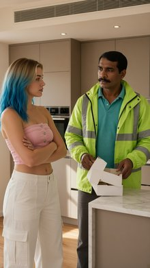
A cinematic-modern Right Close Up of the young brown-haired woman from <IMAGE_1> sitting on the kitchen counter from <IMAGE_0> in a single-character shot. The young brown-haired woman from <IMAGE_1> is positioned frame-right in the midground, sitting on the edge of the white marble kitchen counter. Her torso and head are turned toward frame-left, looking screen-left with a wide-eyed, stunned expression of pure awe at an off-frame character. She retains her exact appearance and wardrobe from <IMAGE_1>, including her young features, blue eyes, brown hair falling around her face, and her low-cut black satin slip dress with thin spaghetti straps. Only the upper half of her body is visible in the frame. The background shows a close-up portion of the modern kitchen from <IMAGE_0>, with the white marble surface of the counter in sharp focus under her, and the rest of the kitchen softly blurred in the background. The lighting is warm afternoon light streaming from the side, highlighting her stunned, starstruck expression and casting soft glows on her skin. The scene is rendered as an IMAX photorealistic film still, shot on ARRI Alexa 65 with IMAX 70mm film quality. Subject rendered with extreme crystal clarity, every detail hyper-defined and sharp, photorealistic, high-fidelity texture, with ultra-sharp focus, visible skin pores, realistic fabric simulation, massive dynamic range, and cinematic color science with a clean precise commercial color grade.
A cinematic, photorealistic right close-up shot of the young woman from <IMAGE_1>, now sitting on the edge of the white marble kitchen island counter from <IMAGE_0>. The composition is a single-character shot where only her upper body is visible, positioned frame-right in the midground. Her torso and head are turned toward the frame-left, and she is looking screen-left with a wide-eyed, stunned expression of pure awe and starstruck wonder, as if reacting to an off-frame character. She retains her exact appearance and wardrobe from <IMAGE_1>, including her youthful features, blue eyes, long wavy brown hair falling naturally around her face and shoulders, and her low-cut black satin slip dress with thin spaghetti straps, which is rendered with highly realistic fabric simulation and sheen. The background features a close-up portion of the modern kitchen from <IMAGE_0>, with the white marble surface of the counter in sharp focus beneath her. The rest of the kitchen, including the stainless steel appliances and white cabinets, is softly blurred in the background with a shallow depth of field. The scene is illuminated by warm afternoon sunlight streaming in from the side, matching the lighting in <IMAGE_0>, casting soft glows on her skin and highlighting her stunned expression. The image is styled as an IMAX photorealistic film still, shot on an ARRI Alexa 65 with IMAX 70mm film quality, featuring extreme crystal clarity, ultra-sharp focus on the subject, visible skin pores, high-fidelity textures, massive dynamic range, and a clean, precise commercial color grade.

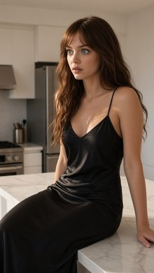
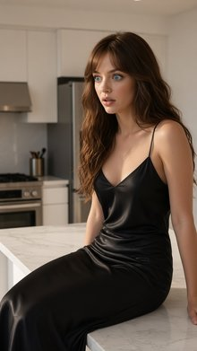
A right close-up cinematic shot of the brown-haired woman from <IMAGE_1> sitting on the edge of the kitchen counter from <IMAGE_0>. She appears exactly once in the frame, positioned centrally in a tight close-up, looking toward screen-right with a mocking, malicious smirk. Her torso and face are turned slightly toward screen-right. She retains her exact appearance and wardrobe from <IMAGE_1>, including her young features, blue eyes, brown hair, and the skimpy low-cut black satin slip dress with thin spaghetti straps. The background shows a soft, heavily blurred depth-of-field view of the sunny beach kitchen from <IMAGE_0>, specifically the marble surfaces and warm-toned interior. Bright, warm afternoon sunlight streams into the frame, catching her brown hair and casting a soft glow across her face. Change the image style to an IMAX photorealistic film still. Shot on ARRI Alexa 65 with IMAX 70mm film quality. Subject rendered with extreme crystal clarity, every detail hyper-defined and sharp. Photorealistic, high-fidelity texture. Ultra-sharp focus on subject, high micro-detail rendering. Freckles/skin pores visible, accurate skin texture, realistic fabric simulation. Massive dynamic range capture, deep shadows and bright highlights. Cinematic color science. Clean precise commercial color grade.
A right close-up cinematic shot of the brown-haired woman from <IMAGE_1> sitting on the edge of the white marble kitchen island from <IMAGE_0>. She appears exactly once in the frame, positioned centrally in a tight close-up, looking toward screen-right with a mocking, malicious smirk on her face. Her torso and face are turned slightly toward screen-right. She retains her exact appearance and wardrobe from <IMAGE_1>, including her young features, blue eyes, long wavy brown hair with bangs, and the skimpy, low-cut black satin slip dress with thin spaghetti straps. The background shows a soft, heavily blurred depth-of-field view of the sunny kitchen from <IMAGE_0>, specifically highlighting the white marble surfaces with grey veins and the warm-toned interior, with out-of-focus hints of the stainless steel refrigerator, white cabinets, and the doorway leading to the living room. Bright, warm afternoon sunlight streams into the frame from the right, catching her brown hair and casting a soft, radiant glow across her face. The image is rendered as an IMAX photorealistic film still, shot on an ARRI Alexa 65 with IMAX 70mm film quality. The subject is rendered with extreme crystal clarity, every detail hyper-defined and sharp, featuring photorealistic, high-fidelity texture. There is an ultra-sharp focus on the subject with high micro-detail rendering, making freckles and skin pores visible, showcasing accurate skin texture, and realistic fabric simulation for the black satin dress. The image features a massive dynamic range capture with deep shadows and bright highlights, cinematic color science, and a clean, precise commercial color grade.

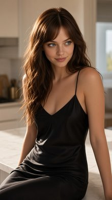
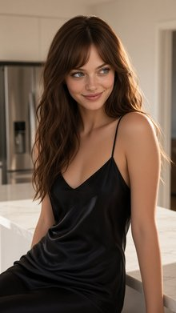
An IMAX photorealistic film still, shot on ARRI Alexa 65 with IMAX 70mm film quality, featuring a medium two shot of the man in the green polo shirt from <IMAGE_1> and the young woman in the black slip dress from <IMAGE_2> sitting side-by-side on the white marble kitchen island from <IMAGE_0> in the midground. The man in the green polo shirt from <IMAGE_1>, appearing exactly once, is sitting frame-left, his head and gaze turned down towards the crushed brown paper delivery bag on the marble surface to his left; he retains his exact middle-aged appearance, dark hair, mustache, wrinkled bright green polo shirt, and khaki cargo pants from <IMAGE_1>. Beside him, the young woman in the black slip dress from <IMAGE_2>, appearing exactly once, is sitting frame-right on the counter, torso angled slightly toward the camera, smirking and looking toward the man; she retains her exact young, brown-haired, blue-eyed appearance and skimpy, low-cut black satin slip dress with thin spaghetti straps from <IMAGE_2>. Between them and to the left on the white kitchen island lies the crushed brown paper delivery bag, heavily crumpled and torn open with grease stains. In the background, the professional kitchen from <IMAGE_0> with the stainless steel refrigerator and warm, bright afternoon sunlight streaming across the scene, casting soft shadows. Extremely sharp focus, hyper-defined textures, high-fidelity skin pores, and a clean, cinematic commercial color grade.
An IMAX photorealistic film still, shot on an ARRI Alexa 65 with IMAX 70mm film quality, capturing a medium two-shot of two people sitting side-by-side on the white marble kitchen island from <IMAGE_0>. On the left side of the frame sits the middle-aged man from <IMAGE_1>, retaining his exact appearance, including his dark hair, prominent mustache, wrinkled bright green polo shirt, khaki cargo pants, and brown sandals. He is seated with his head and gaze turned downwards, looking intently at a heavily crumpled, torn-open brown paper delivery bag with dark grease stains resting on the marble counter to his left. Beside him on the right sits the young woman from <IMAGE_2>, retaining her long wavy brown hair, blue eyes, and her skimpy, low-cut black satin slip dress with thin spaghetti straps. She is seated with her torso angled slightly toward the camera, wearing a subtle smirk as she looks toward the man. The background features the bright, modern kitchen from <IMAGE_0>, complete with the stainless steel refrigerator, range hood, oven, and the open doorway revealing a living room with a sofa. Warm, bright afternoon sunlight streams into the room from the right, casting distinct geometric shadows across the white marble island and the light tiled floor. The image features extremely sharp focus, hyper-defined textures on the clothing and marble, high-fidelity skin pores, and a clean, cinematic commercial color grade.

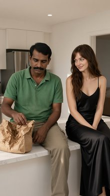
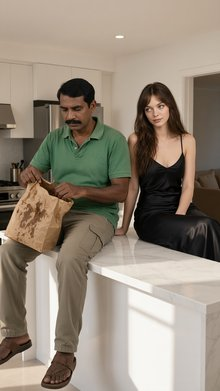
Front Medium Shot of the modern kitchen from <IMAGE_0>. The slender blonde woman with blue-streaked hair from <IMAGE_1> is standing screen-right, framed in the doorway from <IMAGE_0>, looking frame-left with a shocked and dramatic expression. In the midground screen-left, the mustached dark-haired man from <IMAGE_2> and the young brown-haired blue-eyed woman from <IMAGE_3> are in a tight, passionate embrace on the white marble kitchen counter. Below them, a crushed brown paper delivery bag with a green logo lies flattened on the marble. The slender blonde woman retains her exact appearance and wardrobe from <IMAGE_1>, including her white cropped tank top and low-rise blue denim shorts. The mustached man retains his exact appearance and wardrobe from <IMAGE_2>, including his bright green polo shirt. The brown-haired woman retains her exact appearance and wardrobe from <IMAGE_3>, including her black satin slip dress. The scene is illuminated by warm, bright afternoon sunlight streaming in, casting soft shadows across the kitchen. This is an IMAX photorealistic film still. Shot on ARRI Alexa 65 with IMAX 70mm film quality. Subject rendered with extreme crystal clarity, every detail hyper-defined and sharp. Photorealistic, high-fidelity texture, ultra-sharp focus, cinematic color science, clean precise commercial color grade.
xAI upsampler error 400: {"code":"invalid-argument","error":"Failed to start sampling: [input_too_large] The prompt is too long for this model's context window (8401 tokens > 8192 tokens)"}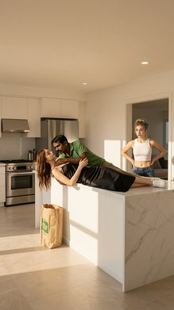
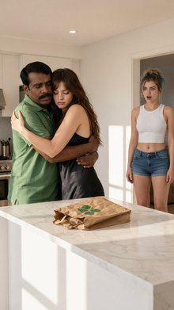
An Over the Shoulder shot looking from behind the shoulder of the man in the green polo from <IMAGE_1>, who is in the extreme foreground, toward the young woman in the black slip dress from <IMAGE_2> on the kitchen counter in the midground. The young woman in the black slip dress appears exactly once, sitting on the white marble kitchen island from <IMAGE_0> in the midground, looking frame-right towards the off-frame character. Her torso is angled frame-right, and she has an intense, defensive glare on her face. A crumpled brown paper Uber Eats delivery bag with green logo and grease stains lies next to her on the counter. The kitchen island and background elements of <IMAGE_0> are visible, while the east wall doorway is excluded from this framing. Warm, bright afternoon sunlight streams from frame-left, illuminating her face and the glossy marble surface. An IMAX photorealistic film still. Shot on ARRI Alexa 65 with IMAX 70mm film quality. Subject rendered with extreme crystal clarity, every detail hyper-defined and sharp. Photorealistic, high-fidelity texture. Ultra-sharp focus on subject, high micro-detail rendering. Freckles/skin pores visible, accurate skin texture, realistic fabric simulation. Massive dynamic range capture, deep shadows and bright highlights. Cinematic color science. Clean precise commercial color grade.
xAI upsampler error 400: {"code":"invalid-argument","error":"Failed to start sampling: [input_too_large] The prompt is too long for this model's context window (8398 tokens > 8192 tokens)"}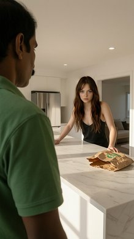
A medium close-up, two-shot camera angle showing the green broccoli man from <IMAGE_1> and the red tomato woman from <IMAGE_2> on the daybed in the luxury cabana from <IMAGE_0>. The green broccoli man is positioned frame-left, sitting on the edge of the daybed. He is facing frame-right, holding a single translucent green grape from prop_grape in his hand, gently raising it toward the tomato woman's mouth with a tender, gentle expression. The tomato woman is positioned frame-right, sitting on the daybed facing frame-left towards him, with her mouth slightly parted ready to receive the grape. The daybed from <IMAGE_0> is situated between them. The green broccoli man appears exactly once and retains his exact appearance and wardrobe from <IMAGE_1>, including his green bumpy muscular broccoli body and his white tropical flower lei. The tomato woman appears exactly once and retains her exact appearance and wardrobe from <IMAGE_2>, including her glossy, smooth red tomato body and gold hoop earrings. The plush white daybed and the sheer white curtains from <IMAGE_0> are visible, with the rest of the cabana background softly blurred. Warm, golden hour light filters through the sheer curtains, casting a soft golden glow on both characters. This is a 4K lifestyle vlog photograph with a soft, even frontal glow, extremely smooth beauty-processed skin with zero grain, and a warm, punchy color grade with boosted saturation.
A medium close-up, two-shot lifestyle vlog photograph set inside the luxury wooden cabana from <IMAGE_0>. The green broccoli man from <IMAGE_1> is positioned on the frame-left, sitting on the edge of the plush white daybed, facing frame-right. He retains his exact appearance and wardrobe from <IMAGE_1>, including his green bumpy muscular body, large black sunglasses, white tropical shirt with orange flowers and green palm leaves, gold chain, and white flower lei. He has a tender, gentle expression and is holding a single translucent green grape in his hand, gently raising it toward the tomato woman's mouth. The red tomato woman from <IMAGE_2> is positioned on the frame-right, sitting on the daybed and facing frame-left towards him. She retains her exact appearance and wardrobe from <IMAGE_2>, including her glossy, smooth red tomato head with a green leafy top, large brown eyes, gold hoop earrings, woven bikini top and bottom adorned with flowers and strawberries, and gold anklet. Her mouth is slightly parted, ready to receive the grape. The plush white daybed with its pillows and the sheer white tied-back curtains from <IMAGE_0> are visible around them, with the rest of the cabana background, including the wooden deck and bamboo table, softly blurred. Warm, golden hour light filters through the sheer curtains, casting a soft golden glow on both characters. The image features a soft, even frontal glow, extremely smooth beauty-processed textures with zero grain, and a warm, punchy color grade with boosted saturation.

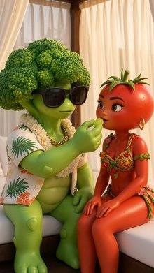
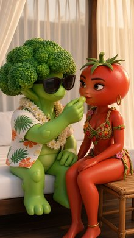
A medium two shot from a 4k-vlog camera showing the broccoli man from <IMAGE_1> and the tomato woman from <IMAGE_2> on the pool deck of the villa from <IMAGE_0>. The broccoli man from <IMAGE_1> stands screen-left in the midground, torso oriented frame-right, looking down at the tomato woman with an earnest, hopeful expression. He appears exactly once. Seated on the wooden sun lounger on the screen-right side of the frame is the tomato woman from <IMAGE_2>, looking back at him with a sharp, unimpressed expression. She appears exactly once. The background features the white stucco wall of the villa and a portion of the pool deck from <IMAGE_0>. The scene is illuminated by bright, direct afternoon sunlight, casting sharp shadows on the tiled floor. The photograph is in a 4K lifestyle vlog style, featuring a soft even frontal glow on the subjects, extremely smooth processed skin with zero grain, and a warm, punchy color grade with boosted saturation.
A medium two-shot captured in a 4K lifestyle vlog style, set on the sunlit pool deck of the modern white villa from <IMAGE_0>. In the midground on the screen-left, the anthropomorphic broccoli character from <IMAGE_1> stands on the beige tiled floor. He retains his detailed broccoli floret head, black sunglasses, white Hawaiian shirt with orange flowers and green palm leaves, white flower lei, thick gold chain, and muscular green body. His torso is oriented towards the frame-right, and he is looking down with an earnest, hopeful expression. On the screen-right, the anthropomorphic tomato character from <IMAGE_2> is seated on one of the wooden sun loungers from <IMAGE_0>. She retains her glossy red tomato head with a green stem, large brown eyes, gold hoop earrings, woven floral bikini, and gold anklet. She is looking back up at the broccoli character with a sharp, unimpressed expression. The background features the white stucco wall with palm leaf shadows, the black wall sconce, and the edge of the sparkling blue swimming pool from <IMAGE_0>. The scene is illuminated by bright, direct afternoon sunlight casting sharp shadows on the tiled floor, combined with a soft, even frontal glow on the subjects. The image has extremely smooth, processed skin with zero grain and a warm, punchy color grade with boosted saturation.
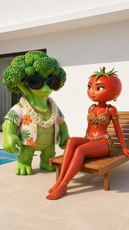
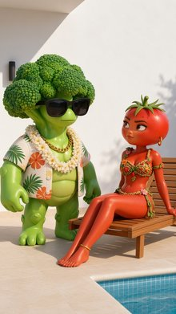
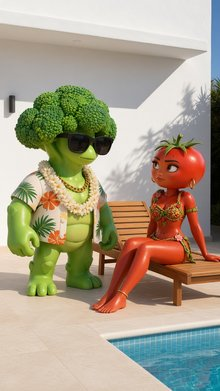
Tight Close Up. The fair-skinned blond man from <IMAGE_1> is framed in a tight close-up shot, his face occupying the center of the image. The fair-skinned blond man from <IMAGE_1> is looking screen-right with wide eyes full of excitement towards the off-frame bouncer. The fair-skinned blond man from <IMAGE_1> appears exactly once in the frame, retaining his exact appearance, blond hair, and his thin black leather choker with a small silver hoop from <IMAGE_1>. The background is the dark brick wall from <IMAGE_0>, heavily blurred. The vibrant neon pink and blue signs from <IMAGE_0> cast strong, saturated highlights across the fair-skinned blond man's face, creating deep shadows. An IMAX photorealistic film still. Shot on ARRI Alexa 65 with IMAX 70mm film quality. Subject rendered with extreme crystal clarity, every detail hyper-defined and sharp. Photorealistic, high-fidelity texture. Ultra-sharp focus on subject, high micro-detail rendering. Freckles/skin pores visible, accurate skin texture, realistic fabric simulation. Massive dynamic range capture, deep shadows and bright highlights. Cinematic color science. Clean precise commercial color grade.
A tight close-up, cinematic IMAX photorealistic film still featuring the fair-skinned blond man from <IMAGE_1>. His face occupies the center of the frame in ultra-sharp focus, rendered with extreme crystal clarity and high micro-detail rendering. He is looking screen-right with wide eyes full of excitement, directing his gaze toward an off-frame bouncer. He retains his exact appearance from <IMAGE_1>, including his styled blond hair, and his thin black leather choker with a small silver hoop. The top edge of his black mesh crop top is visible at the bottom of the frame, showing realistic fabric simulation. The background consists of the dark brick wall and the glowing neon sign from <IMAGE_0>, heavily blurred to create a shallow depth of field. The vibrant neon pink and blue lights from <IMAGE_0> cast strong, saturated magenta and cyan highlights across the left and right sides of the man's face, creating deep, dramatic shadows on the opposite side. Shot on ARRI Alexa 65 with IMAX 70mm film quality, the image features massive dynamic range capture, high-fidelity texture, visible freckles and skin pores, accurate skin texture, cinematic color science, and a clean, precise commercial color grade.

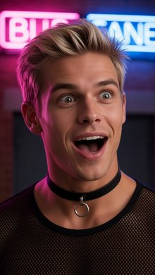
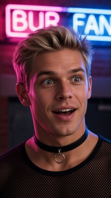
A Front Close Up shot with an extreme shallow depth of field, focusing on the hands of the blonde man from <IMAGE_1> in the foreground. He is wearing the steel handcuffs from the prop description, which are clamped tightly around his wrists. The cold, metallic steel of the handcuffs catches the flashing red emergency light. In the background, the blonde man from <IMAGE_1> is visible, his face rendered with an exaggerated, pouty, dramatic frown. He appears exactly once in the frame. The scene is set inside the narrow high-security vault chamber from <IMAGE_0>, where the intense flashing crimson emergency alarm lights pulse rapidly, casting deep, dramatic red shadows across his body and the handcuffs. Changing the image style to an IMAX photorealistic film still, shot on ARRI Alexa 65 with IMAX 70mm film quality, capturing the subject with extreme crystal clarity, hyper-defined sharp details, accurate skin texture, realistic fabric simulation, a massive dynamic range, and a clean, precise cinematic color grade.
A front close-up shot with an extreme shallow depth of field, focusing sharply on the hands of the blonde man from <IMAGE_1> in the immediate foreground. His wrists are bound by heavy, cold steel handcuffs clamped tightly together. The metallic surface of the handcuffs gleams, catching the intense, flashing crimson light of the environment. In the softly blurred background, the same blonde man appears exactly once, his face contorted into an exaggerated, pouty, dramatic frown. He is wearing the same black crop top with pink trim and black cargo pants with pink zippers seen in <IMAGE_1>. The scene is set inside the narrow, high-security vault chamber from <IMAGE_0>, featuring the same textured stone walls, dark metal doors, and the central black pedestal displaying the glowing red gem under a glass dome. The vault is now illuminated by intense, flashing crimson emergency alarm lights that pulse rapidly, casting deep, dramatic red shadows across the man's body, his clothing, and the handcuffs. The image is styled as an IMAX photorealistic film still, shot on an ARRI Alexa 65 with IMAX 70mm film quality. It features extreme crystal clarity on the foreground hands, hyper-defined sharp details, accurate skin texture, realistic fabric simulation on the sleeves, a massive dynamic range, and a clean, precise cinematic color grade dominated by the flashing red emergency lighting.

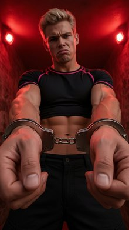
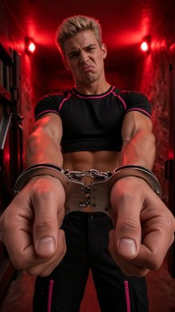
Back Medium Shot of Blake from <IMAGE_1> and Leo from <IMAGE_2> inside the dimly lit bar from <IMAGE_0>. Blake, the blond man from <IMAGE_1>, is positioned centered in the foreground, viewed from behind with his back to the camera, standing by the mahogany counter. Leo, the brown-haired bearded man from <IMAGE_2>, is positioned in the midground, standing behind the counter in the worker's aisle and facing east directly towards Blake. Deep purple LED lights glow from below the counter lip, casting a vibrant violet illumination across both characters and the polished wood surface. Blake is visible from the lower back up, retaining his sheer black mesh crop top, metallic silver skinny pants, and black leather choker from <IMAGE_1>. Leo, facing the camera, retains his exact appearance, dark charcoal denim button-up shirt with rolled-up sleeves, and matching charcoal waist-apron from <IMAGE_2>. The background shows the liquor shelves and bar interior as detailed in <IMAGE_0>. Cinematic-modern style, an IMAX photorealistic film still. Shot on ARRI Alexa 65 with IMAX 70mm film quality. Subject rendered with extreme crystal clarity, every detail hyper-defined and sharp. Photorealistic, high-fidelity texture. Ultra-sharp focus, high micro-detail rendering, accurate skin texture, realistic fabric simulation, massive dynamic range capture with deep shadows and bright highlights, clean precise commercial color grade.
A cinematic-modern, IMAX photorealistic film still capturing a back medium shot set inside the dimly lit bar from <IMAGE_0>. In the foreground, centered and with his back to the camera, stands the blond man from <IMAGE_1>. He is viewed from the lower back up, standing by the mahogany counter, retaining his sheer black mesh crop top, metallic silver skinny pants, and black leather choker with a silver ring from <IMAGE_1>. The metallic fabric of his pants and the mesh of his top catch the ambient light. In the midground, standing behind the counter in the worker's aisle, is the brown-haired, bearded man from <IMAGE_2>. He is facing directly towards the blond man and the camera, retaining his exact appearance, dark charcoal denim button-up shirt with rolled-up sleeves, and matching charcoal waist-apron with metal rivets from <IMAGE_2>. Deep purple LED lights glow from below the counter lip, casting a vibrant violet illumination across both characters, highlighting the textures of their clothing and the polished wood surface. The background faithfully reproduces the bar interior from <IMAGE_0>, featuring the dark wooden floor planks, the illuminated liquor shelves stocked with bottles, the stainless steel under-counter fridge, and the dark ceiling with recessed lights. The scene is shot on ARRI Alexa 65 with IMAX 70mm film quality, featuring ultra-sharp focus, high micro-detail rendering, accurate skin texture, realistic fabric simulation, massive dynamic range capture with deep shadows and bright highlights, and a clean, precise commercial color grade.
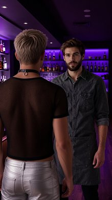
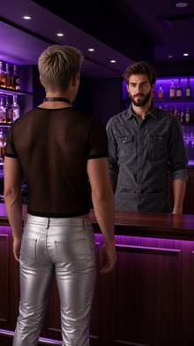
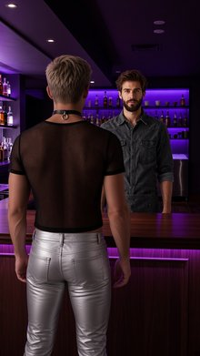
Front Medium Shot of the tall muscular white anthropomorphic rabbit from <IMAGE_1> standing in the alleyway from <IMAGE_0>. The tall muscular white anthropomorphic rabbit appears exactly once in the frame, positioned screen-left in the midground, with his body angled forward. He is holding a polished, chrome-plated semi-automatic pistol with custom ivory grip plates and elegant engravings outstretched with both hands. The brick wall of the alleyway is visible directly behind him. The scene is illuminated by harsh, cool-blue side-lighting that casts sharp shadows and highlights his white fur. Captured in a cinematic-modern style as an IMAX photorealistic film still, shot on ARRI Alexa 65 with ultra-sharp focus on the subject, photorealistic high-fidelity textures, and a clean, precise commercial color grade.
A cinematic, photorealistic front medium shot seamlessly integrating the tall, muscular anthropomorphic white rabbit from <IMAGE_1> into the dark, wet alleyway environment of <IMAGE_0>. The rabbit is positioned screen-left in the midground, his body angled dynamically forward toward the viewer. He retains his distinct features from <IMAGE_1>, including his human-like face with a sinister smile, thick eyebrows, large rabbit ears, and muscular, fur-covered arms and torso. He is still wearing his torn, dark pinstripe vest and matching pants, complete with the gold pocket watch and chain. In this scene, he is holding a polished, chrome-plated semi-automatic pistol with custom ivory grip plates and elegant engravings, gripping it firmly with both hands outstretched in front of him. The background features the gritty alleyway from <IMAGE_0>, with the wet, highly reflective pavement, the green graffiti-covered dumpster, and the tall brick walls receding into the darkness. The brick wall is clearly visible directly behind the rabbit. The scene is illuminated by the harsh, cool-blue side-lighting from the overhead streetlamps, casting sharp, dramatic shadows and brilliantly highlighting the textures of his white fur, the distressed fabric of his suit, and the metallic sheen of the gun. The wet ground reflects the blue light and the rabbit's figure. The image is rendered as an IMAX photorealistic film still, shot on an ARRI Alexa 65, featuring ultra-sharp focus on the subject, high-fidelity textures, and a clean, precise commercial color grade.
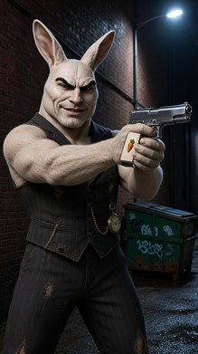
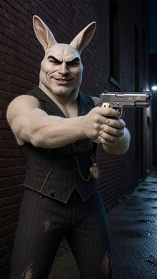
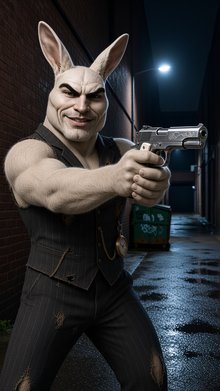
An Over the Shoulder Shot looking over the right shoulder of the blonde woman from <IMAGE_1>, who is positioned on the frame-right foreground. The camera looks across at the green anthropomorphic frog from <IMAGE_2> seated on the stool at the north end of the table (STOOL_A) in the midground on the frame-left, facing south. The blonde woman's right hand and arm are visible in the foreground, holding a modern slim smartphone with a reflective screen and silver-metallic back, pointing it toward him as if vlogging. The green anthropomorphic frog is framed in the midground, holding a small organic mushroom with a glowing bioluminescent violet cap in his webbed hand. Dappled golden sunlight highlights his green skin. The rustic wooden table and mossy clearing from <IMAGE_0> are visible, with the towering neon-pink mushrooms and neon-blue vines filling the background. Warm, shifting patterns of light and dark filter down from the canopy, blended with the vibrant bioluminescent glows. This is an IMAX photorealistic film still, shot on ARRI Alexa 65 with IMAX 70mm film quality, featuring hyper-defined sharp details, clean precise commercial color grade, and realistic fabric and skin textures.
An over-the-shoulder cinematic shot looking over the right shoulder of the blonde woman from <IMAGE_1>, who is positioned in the right foreground. She is wearing the same light blue sleeveless dress with a white lace collar and white waist belt, her wavy blonde hair cascading down her back. Her right arm and hand are prominently visible in the foreground, holding a modern, slim smartphone with a silver-metallic back and a reflective screen, pointing it forward as if vlogging. The camera looks across the rustic wooden picnic table and mossy clearing from <IMAGE_0> toward the midground on the left, where the green anthropomorphic frog from <IMAGE_2> is seated on one of the wooden stools at the far end of the table, facing south toward the woman. The frog retains his red, yellow, and green striped beanie, red oval sunglasses, thick gold chain, and white t-shirt. In his green webbed hand, he holds a small, organic mushroom with a glowing bioluminescent violet cap. Dappled golden sunlight filters through the forest canopy, highlighting the realistic textures of his green skin and clothing. The background features the enchanting forest environment of <IMAGE_0>, complete with the towering neon-pink mushrooms, glowing neon-blue vines wrapping around the tree trunks, and the lush moss-covered ground. The scene is rendered as an IMAX photorealistic film still, shot on an ARRI Alexa 65 with IMAX 70mm film quality, featuring hyper-defined sharp details, a clean, precise commercial color grade, and a beautiful blend of warm, shifting patterns of light and dark with the vibrant bioluminescent pink, blue, and violet glows.
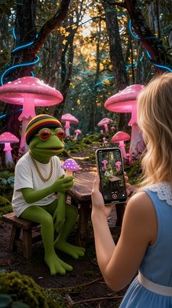
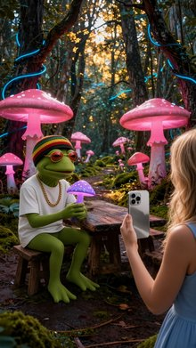
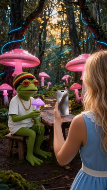
An IMAX photorealistic film still, Front Wide Shot of the mossy clearing from <IMAGE_0>. Seated on STOOL_B at the south end of the table on the screen-right side is the blonde woman from <IMAGE_1>, appearing exactly once in the frame. Her face is tilted upward toward the warm golden sunlight filtering from above, with a serene, peaceful expression, her eyes closed. She retains her exact appearance, fair skin, blonde hair, and blue eyes from <IMAGE_1>, wearing her sky-blue sleeveless summer dress with a delicate white lace collar. Seated on STOOL_A at the north end of the table on the screen-left side is the green anthropomorphic frog from <IMAGE_2>, appearing exactly once in the frame, looking calm and peaceful. He retains his exact appearance as a green frog with webbed feet from <IMAGE_2>, wearing his tiny knitted rasta beanie with red, gold, and green stripes. The rustic wooden table sits between them. The background features giant glowing neon-pink mushrooms and twisting neon-blue vines from <IMAGE_0> framing the scene. Dappled, whimsical golden sunlight filters down from the canopy, mixing with the soft, vibrant bioluminescent pink and blue glow. Shot on ARRI Alexa 65 with IMAX 70mm film quality, subject rendered with extreme crystal clarity, hyper-defined sharp details, high-fidelity texture, realistic fabric simulation, clean precise commercial color grade, cinematic color science.
An IMAX photorealistic film still and front wide shot of the magical mossy forest clearing from <IMAGE_0>. The rustic wooden table and its two wooden stools sit in the center of the frame. Seated on the screen-right stool at the south end of the table is the blonde woman from <IMAGE_1>. She is wearing her exact sky-blue sleeveless summer dress with a delicate white lace collar and white waistband. Her face is tilted upward toward the warm golden sunlight filtering from the canopy above, displaying a serene, peaceful expression with her eyes gently closed, while retaining her fair skin and wavy blonde hair. Seated on the screen-left stool at the north end of the table is the green anthropomorphic frog from <IMAGE_2>. He retains his exact appearance, including his green textured skin, webbed feet, white t-shirt, thick gold chain, red oval sunglasses, and the red, gold, and green striped knitted rasta beanie. He sits calmly and peacefully, looking across the table. The background perfectly preserves the environment of <IMAGE_0>, featuring the giant glowing neon-pink mushrooms, twisting neon-blue vines on the trees, and the mossy dirt path. Dappled, whimsical golden sunlight filters down from the forest canopy, blending seamlessly with the soft, vibrant bioluminescent pink and blue glow of the mushrooms. The scene is rendered with extreme crystal clarity, hyper-defined sharp details, high-fidelity textures, and realistic fabric simulation, emulating an ARRI Alexa 65 camera with IMAX 70mm film quality, complete with a clean, precise commercial color grade and cinematic color science.

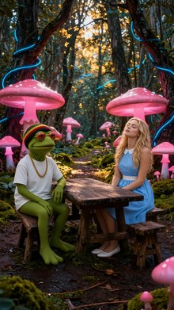
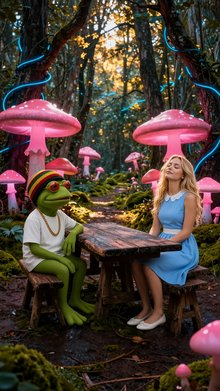
Front Close Up. In the foreground, the young girl from <IMAGE_1> stands screen-center, her head still turned toward screen-left near the dark iron bars. The young girl from <IMAGE_1> is the sole subject, appearing exactly once in the frame. Her head is turned toward screen-left, looking off-frame with a curious expression. She retains her exact appearance and wardrobe from <IMAGE_1>, including her young brown-haired female child features and her simple, bright yellow cotton t-shirt with a cartoon floral print. She is positioned close to the dark iron bars of the gate from <IMAGE_0> which are visible behind her. The background shows the dimly lit street outside. Nighttime. Warm yellow light spills from the home's windows, casting long shadows across the dark stone pavement of <IMAGE_0>. Change the image style to an IMAX photorealistic film still. Shot on ARRI Alexa 65 with IMAX 70mm film quality. Subject rendered with extreme crystal clarity, every detail hyper-defined and sharp. Photorealistic, high-fidelity texture. Ultra-sharp focus on subject, high micro-detail rendering. Freckles/skin pores visible, accurate skin texture, realistic fabric simulation. Massive dynamic range capture, deep shadows and bright highlights. Cinematic color science. Clean precise commercial color grade.
A front close-up shot featuring the young girl from <IMAGE_1> positioned screen-center in the foreground. She retains her exact appearance and wardrobe from <IMAGE_1>, including her dark wavy hair, red bindi, and simple bright yellow cotton t-shirt with cartoon floral prints, now rendered with realistic fabric simulation. Her head is turned toward screen-left, looking off-frame with a curious expression, standing close to the dark iron bars of the gate from <IMAGE_0>, which are prominently visible right behind her. She is the sole subject, appearing exactly once in the frame. The background seamlessly integrates the nighttime environment of <IMAGE_0>, showing the dimly lit street outside the property. Warm yellow light spills from the home's windows in the background, casting long, dramatic shadows across the dark stone pavement. The image is styled as an IMAX photorealistic film still, shot on an ARRI Alexa 65 with IMAX 70mm film quality. The subject is rendered with extreme crystal clarity, ultra-sharp focus, and high micro-detail rendering, revealing accurate skin texture, visible freckles, and skin pores. The lighting features a massive dynamic range capture with deep shadows and bright highlights, finished with a clean, precise commercial color grade and cinematic color science.
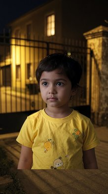
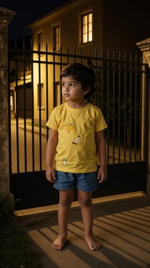
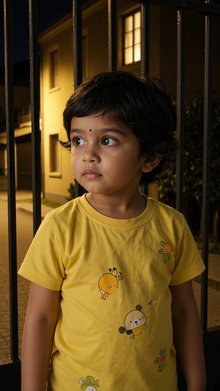
Front Medium Shot of the plastic blonde pink doll from <IMAGE_1> standing inside the display box from <IMAGE_0>. The plastic blonde pink doll from <IMAGE_1> appears exactly once, positioned centered in the midground, standing upright inside the cardboard display box with her torso facing directly forward and both of her plastic palms pressed flat against the transparent front window panel. She has a blank, neutral expression, and retains her exact appearance and wardrobe from <IMAGE_1>, including her plastic blonde hair, neon pink minidress with silver metallic sequined lapels, and structured boxy shoulders. The miniature fake cigarette from prop_cigarette rests inside the small molded plastic slot at the bottom corner of the display box floor. The shot is framed through the transparent clear plastic front window panel, showing the glossy pink interior walls of the box. Artificial midday studio environment illuminated by two high-intensity overhead white spotlights casting harsh downward light and sharp shadows inside the box.
A front medium shot framed directly through the transparent clear plastic front window panel of the white display box seen in <IMAGE_0>. Standing centered in the midground inside the box is the plastic blonde doll from <IMAGE_1>. The doll is positioned standing upright with her torso facing directly forward, and both of her plastic palms are pressed flat against the inside of the transparent front glass panel. She retains her exact appearance and wardrobe from <IMAGE_1>, featuring her voluminous blonde pigtails that fade into fluffy pink ends, a pink butterfly headband, and a blank, neutral facial expression. She is wearing her neon pink minidress with structured boxy shoulders, silver metallic sequined lapels, a studded waist belt, and pink thigh-high boots. Resting inside the small molded plastic slot at the bottom right corner of the display box's floor is a miniature fake cigarette. The interior of the box features the glossy pink walls from <IMAGE_0>, illuminated by the two high-intensity overhead white spotlights. These lights cast harsh downward light and sharp, dramatic shadows over the doll and the pink interior floor. The entire setup is placed within an artificial midday studio environment against a smooth, neutral grey background.

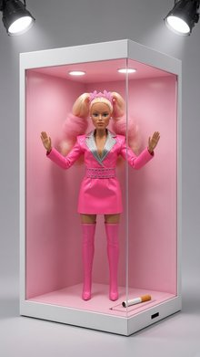
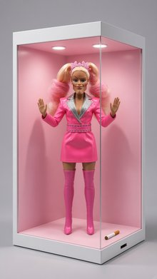
A Front Medium Shot of Deedee Trump from <IMAGE_1> standing behind the center of the stage in <IMAGE_0>. Deedee Trump, the mature fair-skinned woman, appears exactly once, positioned in the midground center directly behind the wooden speaker podium from <IMAGE_0> with her hands resting on the podium. Her torso and head are facing forward toward the camera with a serious and composed facial expression. She retains her exact appearance and wardrobe from <IMAGE_1>, including her blonde hair, tailored scarlet red double-breasted suit jacket with padded shoulders, wide peak lapels, and large gold metallic buttons down the front, paired with a white silk button-down collared dress shirt and glossy red silk necktie. The background shows the dim, dark wood-paneled stage walls of the press auditorium from <IMAGE_0>, while the foreground floor is excluded from the frame. The scene is illuminated by bright white overhead stage spotlights focused on the podium, creating a formal press conference atmosphere with strong contrast against the dim background.
A front medium shot composition integrating the woman from <IMAGE_1> into the stage setting of <IMAGE_0>. The mature, fair-skinned woman with voluminous, wavy blonde hair is positioned in the midground, standing directly behind the wooden speaker podium from <IMAGE_0>. Her hands are resting naturally on the top edges of the podium. She retains her exact appearance and wardrobe from <IMAGE_1>, wearing the tailored scarlet red double-breasted suit jacket with padded shoulders, wide peak lapels, and large gold metallic buttons, paired with a crisp white silk button-down collared shirt and a glossy red silk necktie. Her torso and head face forward toward the camera, maintaining her serious and composed facial expression. The foreground floor and empty chairs from <IMAGE_0> are completely excluded from the frame to focus on the subject. The background features the dim, dark wood-paneled walls of the auditorium from <IMAGE_0>. The scene is dramatically illuminated by bright white overhead stage spotlights focused directly on the woman and the podium, creating a formal, high-contrast press conference atmosphere with deep shadows against the dark wooden backdrop.

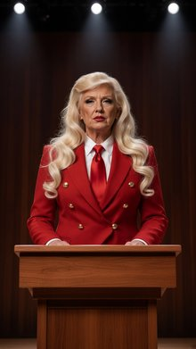
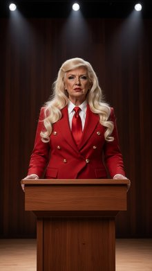
Two Shot of the woman in a white sheet from <IMAGE_1> and the small blue furry monster from <IMAGE_2> standing inside the round silver metal trash can from <IMAGE_0> in the midground, with their upper bodies visible. The woman in a white sheet from <IMAGE_1> is positioned frame-left inside the trash can, looking forward and slightly frame-right with a sarcastic expression, while preserving her tanned skin, brown eyes, brown hair, and her simple white cotton bedsheet wrapping from <IMAGE_1>. The small blue furry monster from <IMAGE_2> stands frame-right beside her within the same trash can, looking wild-eyed and excited directly at the camera, retaining his exact blue fur and appearance from <IMAGE_2>. The round silver metal trash can is centered in the midground, set against the wet brick walls of the narrow alleyway from <IMAGE_0>, with debris and cardboard boxes visible on the screen-right background. Dim, cold midnight moonlight shines down from above, casting deep, high-contrast shadows across the brick walls and damp asphalt pavement. This is an IMAX photorealistic film still. Shot on ARRI Alexa 65 with IMAX 70mm film quality. Subject rendered with extreme crystal clarity, every detail hyper-defined and sharp. Photorealistic, high-fidelity texture. Ultra-sharp focus on subject, high micro-detail rendering, accurate skin texture, realistic fabric simulation. Massive dynamic range capture, deep shadows and bright highlights. Cinematic color science. Clean precise commercial color grade.
Set in the narrow, wet brick alleyway from <IMAGE_0>, this IMAX photorealistic film still features a two-shot of the woman from <IMAGE_1> and the small blue furry monster from <IMAGE_2> standing together inside the round silver metal trash can from <IMAGE_0>. The silver trash can is now centered in the midground of the alleyway, positioned near the original green dumpster. Inside the can, the woman from <IMAGE_1> is positioned on the frame-left, her upper body visible above the rim. She retains her tanned skin, long wavy brown hair, and the simple white cotton bedsheet wrapped around her torso, but now wears a sarcastic expression, looking forward and slightly frame-right. Beside her on the frame-right stands the blue monster from <IMAGE_2>, retaining its exact fluffy blue fur, large eyes, and toothy grin, looking wild-eyed and excited directly at the camera. The background preserves the wet, reflective pavement, the dark brick walls, and the scattered cardboard boxes on the right from <IMAGE_0>. The scene is illuminated by the same dim, cold midnight moonlight shining from above, casting deep, high-contrast shadows. Shot on ARRI Alexa 65 with IMAX 70mm film quality, the image boasts extreme crystal clarity, hyper-defined textures, realistic fabric simulation, massive dynamic range, and a clean, precise commercial color grade.
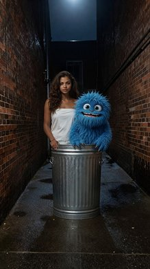
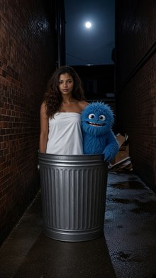
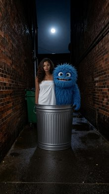
A cinematic-modern Two Shot of Dominique from <IMAGE_1> and Harold from <IMAGE_2> on the unmade bed from <IMAGE_0>. On the screen-left side of the bed, Dominique from <IMAGE_1> is sitting up, her body oriented towards the center but her head turned as she stares screen-right with an expression of absolute dread. She appears exactly once in the frame, retaining her exact appearance, brown hair, tanned skin, and wardrobe from <IMAGE_1> where she is wrapped tightly in a simple white cotton bedsheet. On the screen-right side of the bed, Harold from <IMAGE_2> is sitting, raising his blue furry arm and gesturing excitedly while laughing directly at Dominique. Harold appears exactly once, retaining his exact appearance as a small, nude, blue furry monster from <IMAGE_2>. The shot captures the queen-sized bed angled diagonally, with the nightstand visible in the background on the screen-left. The morning light filters dimly through the closed window blinds, casting soft, warm dust-mote shadows across the unmade bed and the characters. Captured in the style of an IMAX photorealistic film still, shot on ARRI Alexa 65 with IMAX 70mm film quality, rendering characters with extreme crystal clarity, sharp focus, massive dynamic range, deep shadows, and cinematic color grading.
A cinematic-modern two-shot set in the bedroom from <IMAGE_0>, featuring the unmade wooden bed angled diagonally across the frame. On the screen-left side of the bed, the woman from <IMAGE_1> is sitting up on the rumpled white sheets. She retains her exact appearance, including her long wavy brown hair, tanned skin, and the simple white cotton bedsheet wrapped tightly around her body, but she is now seated. Her body is oriented towards the center, but her head is turned sharply to the right, staring screen-right with an expression of absolute dread, her eyes wide and face tense with fear. On the screen-right side of the bed sits the small, blue furry monster from <IMAGE_2>. The monster retains its exact appearance, including its thick blue fur, large expressive eyes, toothy grin, and clawed hands and feet. It is sitting on the bed, raising one furry arm high, gesturing excitedly, and laughing directly at the woman. The background retains the elements of <IMAGE_0>, including the wooden nightstand with cans on the screen-left, the wooden floor with scattered jewelry, and the window with closed blinds on the right. The morning light filters dimly through the blinds, casting soft, warm, striped shadows and illuminating floating dust motes across the unmade bed and the characters. The image is rendered in the style of an IMAX photorealistic film still, shot on an ARRI Alexa 65 with IMAX 70mm film quality, featuring extreme crystal clarity, sharp focus on the characters, massive dynamic range, deep shadows, and cinematic color grading.

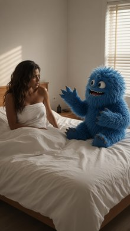
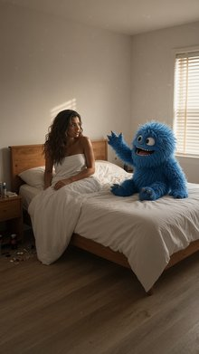
Front Medium Shot of the blond woman in the blue slip dress from <IMAGE_1> standing in front of the large flat-topped blue mushroom from <IMAGE_0>, captured from the static perspective of her phone propped on the mushroom's edge. The blond woman from <IMAGE_1> appears exactly once, positioned in the midground, occupying the center of the frame from the waist up. She holds the matte black invitation card with the silver wax seal in both of her hands, presenting it towards the camera. She looks directly at the camera with a bright, dynamic, and charismatic smile. She retains her exact appearance and wardrobe from <IMAGE_1>, including her fair skin, blond hair, modern blue silk slip dress, and delicate silver necklace. Visible in the frame is the large blue flat-topped mushroom from <IMAGE_0> in the immediate foreground, with its edge framing the bottom of the shot, and the surrounding clearing with wild purple ferns. Dreamy twilight with pastel lavender skies fills the background, with a soft pink and orange glow emanating from the flowers, casting a warm, soft light on her face and the mushroom. The image style is an iPhone 16 Pro Max rear camera photograph, 24mm main lens, 2x optical zoom, sharp focus, subtle depth of field, true-to-life colors, clean neutral tones, photorealistic, ultra detailed, raw photo, minimal grain, natural skin texture, 4k, dynamic range, sharp contrast, natural lighting, HDR.
A front medium shot, framed from the waist up, featuring the blonde woman from <IMAGE_1> standing in the mystical forest clearing seen in <IMAGE_0>. The camera perspective simulates a smartphone propped on the edge of the large, flat-topped blue mushroom with white spots from <IMAGE_0>, with the mushroom's rim out of focus in the immediate foreground framing the bottom of the shot. The woman is positioned in the center midground, retaining her exact appearance and wardrobe from <IMAGE_1>, including her fair skin, wavy blonde hair, delicate silver necklace, and modern blue silk slip dress. She is looking directly at the camera with a bright, dynamic, and charismatic smile. In both hands, she holds up a matte black invitation card featuring a prominent silver wax seal, presenting it directly towards the lens. The surrounding environment is filled with the wild purple ferns from <IMAGE_0>. The background features the same dreamy twilight atmosphere with pastel lavender skies and tall forest trees. A soft pink and orange glow, emanating from the magical flora, casts a warm, soft light on the woman's face and the mushroom's edge. The image is rendered in the style of an iPhone 16 Pro Max rear camera photograph, utilizing a 24mm main lens with 2x optical zoom. It features sharp focus on the woman, a subtle depth of field, true-to-life colors, clean neutral tones, natural skin texture, minimal grain, and high dynamic range with sharp contrast.
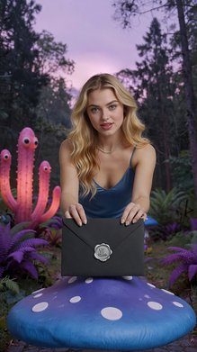
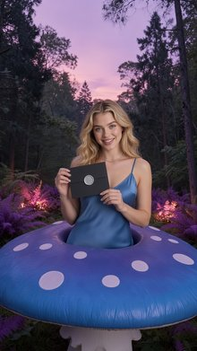
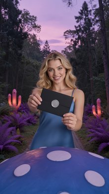
Front Medium Shot in an iphone-selfie style of the blond woman from <IMAGE_1> descending down toward the giant red velvet armchair from <IMAGE_0>. The blond woman from <IMAGE_1> appears exactly once in the frame, positioned in the foreground and midground as if falling or floating downward. Her torso is angled slightly, with her head facing forward directly toward the camera. Her hands are holding her phone high-angle, facing her own face, with her arm extended forward and out of frame toward the bottom right, visibly holding the device in a natural selfie posture. She has a shocked and excited expression on her face, and her hair is floating upwards. She retains her exact appearance and wardrobe from <IMAGE_1>, including her fair skin, long blond hair, modern blue silk slip dress, and delicate silver necklace. Below her in the midground and background, the mossy clearing from <IMAGE_0> is visible, showing the giant red velvet armchair resting on the mossy earth. The lighting is a dim, mystical subterranean blue bioluminescence with floating dust particles floating in shafts of soft white light. Photo-realism, High-fidelity texture: exact skin color, undertone, hue, saturation, pores, fine lines, natural discoloration, moles, freckles, and blemishes — no smoothing, retouching, or beautification.
A front medium shot captured in a vertical iPhone-selfie style, combining the subjects and environments of <IMAGE_0> and <IMAGE_1>. In the foreground, the blonde woman from <IMAGE_1> appears exactly once, positioned mid-air as if falling or floating downward toward the ground. She retains her exact appearance and wardrobe from <IMAGE_1>, wearing the same blue silk slip dress and delicate silver necklace. Her torso is angled slightly, but her head faces forward directly toward the camera lens with a shocked and excited expression, her eyes wide and mouth open in surprise. Her long blonde hair is floating wildly upwards, emphasizing the downward motion. One arm is extended forward and out of frame toward the bottom right, visibly holding the device in a natural high-angle selfie posture. Her skin is rendered with high-fidelity texture, displaying exact skin color, undertones, pores, fine lines, natural discoloration, moles, freckles, and blemishes with absolutely no smoothing, retouching, or beautification. Below her, in the midground and background, the mystical forest clearing from <IMAGE_0> is visible. The giant red velvet tufted armchair from <IMAGE_0> rests on the dark, earthy, mossy ground, surrounded by the thick, gnarled tree roots and hanging vines. The lighting is a dim, mystical subterranean blue bioluminescence, with floating dust particles illuminated by shafts of soft white light beaming down from the canopy above.
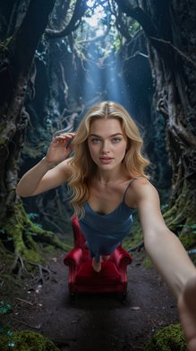
Front Medium Shot of the wizard from <IMAGE_1> positioned in the center of the frame as the blue magical barrier fades away. The wizard from <IMAGE_1> is standing in the center of the frame, looking directly forward at the camera with a weary, soot-smudged face, retaining his exact appearance, long gray hair and beard, and classic blue wizard robes and pointed hat from <IMAGE_1>. Wisps of black smoke and grey ash drift lazily around his head, and small glowing embers float in the air. The background of the cavern from <IMAGE_0> is visible, with jagged black volcanic glass walls. The scene is dimly and moodily lit primarily by the low-frequency orange glow of distant lava trickling down the volcanic walls and the floating embers in the air, creating deep shadows and high-contrast highlights. The image is rendered as an IMAX photorealistic film still, shot on ARRI Alexa 65 with IMAX 70mm film quality, capturing extreme crystal clarity, hyper-defined sharp details, realistic fabric simulation, and a clean, precise cinematic color grade.
A front medium shot of the wizard from <IMAGE_1> standing in the center of the frame, positioned within the dark volcanic cavern environment from <IMAGE_0>. The wizard retains his exact appearance, including his long gray hair, full beard, and the intricate blue robes with gold embroidery, brown leather belt, and pointed hat seen in <IMAGE_1>. However, his face is now visibly weary and heavily smudged with dark soot, and he is looking directly forward at the camera. A translucent, glowing blue magical barrier is actively fading away around him, its mystical energy dissipating into the air. Wisps of black smoke, grey ash, and small glowing orange embers drift lazily around his head and shoulders. The background features the jagged black volcanic glass walls and distant lava flows of the cavern from <IMAGE_0>, with the circular stone table and curved benches partially visible at the bottom of the frame, mostly obscured by the wizard's draped robes. The scene is dimly and moodily lit primarily by the low-frequency orange glow of the lava trickling down the volcanic walls and the floating embers, creating deep shadows and high-contrast highlights on the wizard's soot-stained face and the gold embroidery of his attire. The image is rendered as an IMAX photorealistic film still, shot on an ARRI Alexa 65 with IMAX 70mm film quality, capturing extreme crystal clarity, hyper-defined sharp details, realistic fabric simulation, and a clean, precise cinematic color grade.

Front Wide Shot of the elderly wizard and the enormous balrog standing opposite each other at the circular stone table within the massive volcanic cavern from <IMAGE_0>. Frame-left, the elderly wizard from <IMAGE_1> stands defensively, facing frame-right towards the beast, with his body tensed and a look of sheer terror on his bearded face; he retains his exact appearance and wardrobe from <IMAGE_1>, including his gray hair and beard, classic blue wizard robes, and pointed hat. Frame-right, the enormous balrog from <IMAGE_2>, a horned, glowing, magma-covered demon wearing primordial armor of hardened black magma plates, is facing frame-left, spewing a massive, horizontal wave of bright orange and white fire directly from its wide-open jaws toward the wizard. The fiery blast travels horizontally across the top of the stone table. Positioned on the center of the stone table, the glowing chalice is enveloped by intense heat distortion. Each character appears exactly once in the frame. The background consists of the cavern walls from <IMAGE_0> with far-off trickling orange lava. The scene is illuminated by the intense, brilliant glare of the horizontal fire blast, casting harsh, dramatic orange and white light on the wizard and the table, contrasting with the dim and moody ambient light and glowing embers floating in the air. Shot in the style of an IMAX photorealistic film still, shot on ARRI Alexa 65 with IMAX 70mm film quality, extreme crystal clarity, hyper-defined details, and realistic texture rendering.
A front wide shot set within the massive volcanic cavern from <IMAGE_0>, featuring the cracked stone floor, the central circular stone table, and the curved stone benches. On the frame-left, the elderly wizard from <IMAGE_1> stands defensively, facing frame-right towards the beast. He retains his exact appearance and wardrobe from <IMAGE_1>, including his gray hair, long gray beard, pointed blue hat, and blue robes with intricate gold embroidery, but his body is now tensed and his face shows a look of sheer terror. On the frame-right, the enormous balrog from <IMAGE_2> stands facing frame-left. The demon retains its horned head, glowing magma body, and primordial armor of hardened black magma plates, but its jaws are now wide open, spewing a massive, horizontal wave of bright orange and white fire directly toward the wizard. The fiery blast travels horizontally across the top of the stone table. Positioned on the center of the stone table, a glowing chalice is enveloped by intense heat distortion. Each character appears exactly once in the frame. The background consists of the dark, jagged cavern walls from <IMAGE_0> with far-off trickling orange lava. The scene is illuminated by the intense, brilliant glare of the horizontal fire blast, casting harsh, dramatic orange and white light on the wizard and the table, contrasting with the dim and moody ambient light and glowing embers floating in the air. Shot in the style of an IMAX photorealistic film still, shot on ARRI Alexa 65 with IMAX 70mm film quality, extreme crystal clarity, hyper-defined details, and realistic texture rendering.

Front Wide Shot of a wizard and a colossal demon sitting opposite each other. The elderly wizard from <IMAGE_1> is seated at the frame-left side of the circular stone table from <IMAGE_0>, looking up and to the frame-right. He appears exactly once, retaining his exact appearance, long gray hair, beard, classic blue wizard robes, and pointed hat from <IMAGE_1>. Resting against his stone seat is a six-foot-tall, gnarled wooden wizard's staff with a raw sapphire crystal in a wooden claw at the top. On the table's rough surface sits a heavy, dark basalt stone chalice filled with a bubbling, glowing red liquid. Across the table, the colossal, fiery horned demon from <IMAGE_2> towers in the midground and background, its massive silhouette covered in hardened black magma plates, with its glowing magma chest radiating heat. The vast underground cavern from <IMAGE_0> is visible, with jagged black volcanic glass walls and low-frequency orange lava flows trickling down in the far background. Dim, moody ambient lighting with glowing orange embers floating in the air and a warm glow cast from the demon's chest. Change the image style to an IMAX photorealistic film still. Shot on ARRI Alexa 65 with IMAX 70mm film quality. Subject rendered with extreme crystal clarity, every detail hyper-defined and sharp. Photorealistic, high-fidelity texture. Ultra-sharp focus on subject, high micro-detail rendering. Accurate skin texture, realistic fabric simulation. Massive dynamic range capture, deep shadows and bright highlights. Cinematic color science. Clean precise commercial color grade.
A front wide shot set within the dark, volcanic cavern environment from <IMAGE_0>, featuring the circular stone table and curved stone benches. Seated on the frame-left side of the curved stone bench is the elderly wizard from <IMAGE_1>, retaining his exact appearance, including his long gray hair, full beard, pointed blue hat, and intricate blue robes with gold embroidery. He is looking up and to the frame-right towards his companion. Resting against his stone seat is a six-foot-tall, gnarled wooden wizard's staff topped with a raw sapphire crystal gripped in a wooden claw. On the rough surface of the stone table sits a heavy, dark basalt stone chalice filled with a bubbling, glowing red liquid. Across the table, seated on the right side, the colossal, fiery horned demon from <IMAGE_2> towers in the midground and background. The demon retains its massive silhouette, hardened black magma plates, large horns, and intensely glowing magma chest radiating heat. The background showcases the vast underground cavern from <IMAGE_0> with its jagged black volcanic glass walls and low-frequency orange lava flows trickling down in the distance. The scene is illuminated by dim, moody ambient lighting, with glowing orange embers floating in the air and a warm, dramatic glow cast by the demon's chest. The image is rendered as an IMAX photorealistic film still, shot on an ARRI Alexa 65 with IMAX 70mm film quality. The subjects are rendered with extreme crystal clarity, hyper-defined sharp details, photorealistic high-fidelity textures, accurate skin and beard textures, and realistic fabric simulation. The composition features ultra-sharp focus on the subjects, massive dynamic range capture with deep shadows and bright highlights, cinematic color science, and a clean, precise commercial color grade.

Front Medium Shot. Epic Wizard and Giant Ogre in the forest path from <IMAGE_0>. The elderly male wizard from <IMAGE_1> stands in the midground center, facing forward towards the camera, holding the gnarled six-foot-tall wooden staff with a glowing amber crystal orb on top upright with both hands in front of his chest. He retains his exact appearance and wardrobe from <IMAGE_1>, including his long grey hair, full grey beard, and his long hooded crimson wizard robe with gold embroidery, and his face shows an intense, dramatic expression. Beside him, the massive green muscular humanoid monster from <IMAGE_2> stands in the midground frame-right, facing forward towards the camera, maintaining his exact muscular green physical identity, tattered brown animal hide loincloth, and heavy iron ring collar from <IMAGE_2>. The background shows the dirt path flanked by ancient oak trees and the weathered stone archway at the northern end from <IMAGE_0>. Late afternoon sunlight filters through the dense tree canopy, casting long diagonal golden rays and soft blue shadows across the forest floor with no artificial light sources.
A front medium shot capturing an epic fantasy scene set within the serene woodland environment of <IMAGE_0>. The background features the same dirt path flanked by ancient, sprawling oak trees with thick, exposed roots and the weathered, moss-covered stone archway at the far end. In the center midground stands the elderly wizard from <IMAGE_1>, retaining his exact appearance, including his long grey hair, full grey beard, and the long, hooded crimson robe with gold-embroidered cuffs and a rope belt. His face now bears an intense, dramatic expression, and he is gripping a gnarled, six-foot-tall wooden staff topped with a brightly glowing amber crystal orb, holding it upright with both hands in front of his chest. To his right, in the frame-right midground, stands the massive green muscular humanoid monster from <IMAGE_2>, maintaining his exact physical identity, including his textured green skin, heavy iron ring collar, and tattered brown animal hide loincloth stitched with black cord. Both figures face forward toward the camera. The scene is illuminated by the natural late afternoon sunlight filtering through the dense tree canopy from <IMAGE_0>, casting long, diagonal golden rays and soft blue shadows across the forest floor, with no artificial light sources present.
Front Medium Two Shot of the tomato woman from <IMAGE_1> and the devil from <IMAGE_2> standing on the sidewalk from <IMAGE_0>. On the frame-left, the tomato woman from <IMAGE_1> stands in the midground, with her shoulders squared and body facing frame-right towards <IMAGE_2>. She holds a single small, plump, elongated red San Marzano tomato in her right hand at waist height. She retains her exact appearance as a red spherical anthropomorphic tomato with green stem features and humanoid features, wearing her crimson silk slip dress with spaghetti straps, a cowl neckline, and a gold chainlink waist belt from <IMAGE_1>. On the frame-right, the devil from <IMAGE_2> stands in the midground, facing frame-left towards <IMAGE_1> with both of his hands tucked into his suit pockets. He retains his exact appearance as a red, horned male demon wearing a tailored charcoal gray wool suit jacket, matching trousers, and a white button-down shirt unbuttoned at the collar from <IMAGE_2>. They are both positioned in the midground on the concrete sidewalk from <IMAGE_0>, beneath the warm amber glow of the mounted streetlamp. The background shows the weathered brick apartment building facade. The scene is set at night, illuminated by the warm amber glow of the overhead streetlamp and the distant cool glare of city streetlights, casting soft shadows on the concrete sidewalk.
A front medium two-shot set on the nighttime street scene from <IMAGE_0>. In the midground, standing on the cracked concrete sidewalk, are two figures facing each other. On the frame-left is the anthropomorphic tomato woman from <IMAGE_1>, retaining her exact appearance: a large, glossy red tomato head with a green stem, expressive eyes, and a humanoid body with brown skin. She wears her crimson silk slip dress with spaghetti straps, a cowl neckline, a gold chainlink waist belt, and red high heels. Her body faces frame-right toward the other figure, and she holds a single small, plump, elongated red San Marzano tomato in her right hand at waist height. On the frame-right stands the red-skinned, horned devil from <IMAGE_2>, retaining his exact appearance: a sinister grinning face with red horns and pointed ears, wearing a tailored charcoal gray wool suit jacket, matching trousers, black dress shoes, and a white button-down shirt unbuttoned at the collar. He faces frame-left toward the tomato woman, with both of his hands casually tucked into his suit trousers' pockets. They are positioned beneath the warm amber glow of the mounted streetlamp attached to the weathered brick apartment building facade on the right. The lighting casts soft, dramatic shadows on the concrete sidewalk, while the background features the dark street extending into the distance, illuminated by the distant cool glare of city streetlights.

Front Medium Close Up of the red-skinned demon from <IMAGE_1> standing in the midground on the dark asphalt street from <IMAGE_0>, staring downward toward the pavement. The red-skinned demon from <IMAGE_1> appears exactly once in the frame, positioned centrally in a medium close-up shot showing him from the chest up. His body is oriented slightly to the frame-right but his head is tilted down, looking frame-downward with wide, expressive eyes and a solemn expression. He retains his exact physical appearance from <IMAGE_1>, including his vibrant red skin, curved black horns protruding from his forehead, and his tailored charcoal gray wool suit jacket, crisp white button-down shirt left unbuttoned at the collar, and slim-fit trousers. Scattered on the asphalt street pavement beneath his gaze is a small, plump, elongated San Marzano tomato with glossy, deep red skin and a small green stem cap. The background shows the dark asphalt street and the curb from <IMAGE_0>, with other background elements excluded from the frame. Nighttime setting, illuminated by the warm amber glow of the overhead streetlamp and the distant cool glare of city streetlights, casting dramatic highlights on the demon's horns and red skin.
A front medium close-up shot capturing the red-skinned demon from <IMAGE_1> standing on the dark asphalt street from <IMAGE_0>. The demon appears exactly once in the frame, positioned centrally and framed from the chest up. His body is oriented slightly toward the right of the frame, but his head is tilted downward, staring intently at the pavement below. His facial expression has changed to a solemn, serious look with wide, expressive eyes, while retaining his exact physical features from <IMAGE_1>, including his vibrant red skin, pointed ears, and curved black horns. He is wearing the same tailored charcoal gray wool suit jacket and crisp white button-down shirt left unbuttoned at the collar. On the dark asphalt street pavement directly beneath his gaze lies a single, small, plump, elongated San Marzano tomato with glossy, deep red skin and a small green stem cap. The background consists solely of the dark asphalt street and the edge of the concrete curb from <IMAGE_0>, with the brick building and other background elements excluded to maintain a tight focus. The nighttime scene is dramatically illuminated by the warm amber glow of the overhead streetlamp and the distant cool glare of city streetlights, casting striking highlights on the demon's horns, red skin, and suit.

Front Medium Two Shot. On the dirt path in the forest from <IMAGE_0>, the tall black-haired bearded man from <IMAGE_1> stands upright in the midground center, facing south directly towards the camera with his arms resting at his sides. He is wearing his dark blue tactical zip-up hoodie over a charcoal gray crewneck t-shirt and slim-fit dark indigo denim jeans, retaining his exact appearance and wardrobe from <IMAGE_1>. A futuristic titanium plasma sword from prop_plasma_sword rests in a holster on his waist. Standing in the foreground, two meters behind the tall black-haired bearded man from <IMAGE_1> from the camera's perspective, is the slim, brown-skinned woman from <IMAGE_2>. She is facing south directly toward the camera, standing with her hands resting confidently on her hips. She retains her exact appearance, curly dark hair, and wardrobe from <IMAGE_2>, wearing her emerald green velvet crop top and high-waisted acid-wash denim shorts. Both characters appear exactly once in the frame. The scene is set on the dirt pathway from <IMAGE_0> flanked by gnarled oak trees, with late afternoon sunlight filtering through the dense canopy to cast long diagonal golden rays and soft blue shadows.
{"rewrite": "A medium two-shot composition set on the forest dirt path from <IMAGE_0>. In the midground center, the tall, black-haired, bearded man from <IMAGE_1> stands upright, facing directly towards the camera with his arms resting naturally at his sides. He retains his exact appearance and wardrobe from <IMAGE_1>, wearing the dark blue zip-up hoodie over a charcoal gray crewneck t-shirt and slim-fit dark indigo denim jeans. Added to his waist is a dark tactical holster containing a futuristic titanium plasma sword, featuring a sleek metallic titanium hilt and a glowing energy blade. Standing in the foreground, approximately two meters closer to the camera than the man, is the slim, brown-skinned woman from <IMAGE_2>. She faces directly toward the camera, standing confidently with her hands resting on her hips. She retains her exact appearance, voluminous curly dark hair, and wardrobe from <IMAGE_2>, wearing the emerald green velvet crop top, high-waisted acid-wash denim shorts, and white platform sneakers. Both characters appear exactly once in the frame. The environment perfectly matches <IMAGE_0>, featuring the textured dirt pathway covered in dry leaves, flanked by large gnarled oak trees with exposed roots, and the moss-covered stone archway in the background. The lighting captures the late afternoon golden hour
Front Medium Two Shot of Tomatina and Brock bro on the blue-tiled pool deck from <IMAGE_0>. Tomatina from <IMAGE_1> appears exactly once, standing upright in the foreground on the blue-tiled pool deck near the edge of the sparkling swimming pool. She is facing screen-right toward Brock bro with empty hands, looking directly at him. She retains her exact appearance of a red tomato-headed woman and her wardrobe from <IMAGE_1>, including her vibrant crimson silk slip dress with a cowl neckline and spaghetti straps, strappy gold heeled sandals, and a delicate gold waist chain. Brock bro from <IMAGE_2> appears exactly once, standing two meters away in the midground near the poolside sun loungers, facing screen-left toward Tomatina with empty hands. He retains his exact appearance of a green, bumpy, vegetable-headed anthropomorphic man with a broccoli head and his wardrobe from <IMAGE_2>, including his tailored emerald green linen two-piece suit with a single-button blazer, slim-fit trousers, crisp white open-collar cotton dress shirt, and brown leather loafers. In the midground, the outdoor dining table from <IMAGE_0> is visible; an empty Wicker Bread Basket is positioned in the exact center of the table, and a Ceramic Olive Oil Bowl sits on the left side of the dining table next to a white linen napkin. The background features the cabana and the open wooden deck from <IMAGE_0>, while the interior of the villa remains off-frame. Bright golden hour afternoon sunlight streams from the upper left, casting warm amber highlights and long soft shadows across the pool deck, matching the lighting of <IMAGE_0>.
A front medium two-shot set in the outdoor poolside environment from <IMAGE_0>. In the foreground, standing on a blue-tiled pool deck near the edge of the sparkling swimming pool, is the tomato-headed woman from <IMAGE_1>. She is facing screen-right, looking directly at the other character with her hands empty at her sides. She retains her exact appearance and wardrobe from <IMAGE_1>, including her red tomato head with a green stem, her vibrant crimson silk slip dress with a cowl neckline and spaghetti straps, the delicate gold waist chain, and her strappy gold heeled sandals. Two meters away in the midground, standing near the poolside sun loungers, is the broccoli-headed man from <IMAGE_2>. He is facing screen-left toward the woman, also with empty hands. He retains his exact appearance and wardrobe from <IMAGE_2>, featuring his green bumpy broccoli head, black sunglasses, tailored emerald green linen two-piece suit with a single-button blazer, slim-fit trousers, crisp white open-collar cotton dress shirt, and brown leather loafers. In the midground, the outdoor wooden dining table and chairs from <IMAGE_0> are visible. Resting in the exact center of the table is an empty wicker bread basket, and on the left side of the table sits a ceramic olive oil bowl next to a white linen napkin. The background features the white stucco wall, the cabana with white curtains, and the open wooden deck from <IMAGE_0>, with the interior of the villa remaining off-frame. Bright golden hour afternoon sunlight streams from the upper left, casting warm amber highlights and long soft shadows across the pool deck, perfectly matching the lighting of <IMAGE_0>.
A Left Medium Shot of Tomatina and Brock bro at the outdoor dining table from <IMAGE_0>. The tomato-headed woman, Tomatina, from <IMAGE_1>, sits in the midground at the dining table on the right side of the deck. She holds the wicker bread basket, filled with sliced French baguettes, over her lap with a white linen napkin draped across her lap. She retains her exact appearance of a red tomato head and her vibrant crimson silk slip dress with spaghetti straps from <IMAGE_1>. She is looking slightly frame-left with a gentle expression. Beside her stands Brock bro, the green broccoli-headed man from <IMAGE_2>, looking towards Tomatina with empty hands. He is wearing his tailored emerald green linen two-piece suit and crisp white open-collar cotton dress shirt from <IMAGE_2>, retaining his exact vegetable-headed appearance. The ceramic olive oil bowl sits on the left side of the dining table. The scene captures the midground outdoor dining area against the right stucco villa wall of <IMAGE_0>, with the blue-tiled swimming pool partially visible on the left. Bright golden hour afternoon sunlight streams from the upper left, casting warm amber highlights and long soft shadows across the characters and the pool deck.
A left medium shot capturing the midground outdoor dining area on the wooden deck from <IMAGE_0>, now featuring the two characters seamlessly integrated into the scene. Seated at the wooden dining table on the right side of the deck is Tomatina, the tomato-headed woman from <IMAGE_1>. She retains her exact appearance, including her large red tomato head with a green stem, expressive eyes, and her vibrant crimson silk slip dress with spaghetti straps and a double gold chain belt. She is sitting on one of the wooden chairs, looking slightly toward the left of the frame with a gentle expression. A white linen napkin is draped across her lap, and she is holding a rustic wicker bread basket filled with sliced French baguettes over her lap. Standing beside her is Brock bro, the broccoli-headed man from <IMAGE_2>, looking towards Tomatina with his empty green hands relaxed at his sides. He retains his exact vegetable-headed appearance, including his textured green broccoli head, dark sunglasses, tailored emerald green linen two-piece suit, crisp white open-collar cotton dress shirt, and brown loafers. On the left side of the wooden dining table sits a small ceramic olive oil bowl. The scene is framed from the left, with the blue-tiled swimming pool and its stone edge partially visible on the left side, and the white stucco villa wall with its black lantern on the right. Bright golden hour afternoon sunlight streams from the upper left, casting warm amber highlights on the characters and the white canopy, while creating long, soft shadows across the wooden planks of the deck.

Left Medium Shot of Tomatina and Purple Nurple standing on the open wooden deck near the outdoor dining table from <IMAGE_0>. Tomatina from <IMAGE_1>, a red tomato-headed woman, stands in the foreground frame-right, with her body and head turned facing frame-left towards Purple Nurple; she has empty hands and retains her exact appearance and wardrobe from <IMAGE_1>, including her vibrant crimson silk slip dress with a cowl neckline and spaghetti straps, and a delicate gold waist chain. Purple Nurple from <IMAGE_2>, a purple glossy bulky anthropomorphic eggplant, stands in the midground frame-left facing frame-right towards Tomatina; he has empty hands and retains his exact appearance and wardrobe from <IMAGE_2>, including his sharp violet velvet smoking jacket with black satin lapels and black silk dress shirt. On the outdoor dining table from <IMAGE_0>, a wicker bread basket, which is an oval-shaped woven wicker basket filled with sliced crusty baguettes, and a ceramic olive oil bowl, which is a small, round white ceramic dipping bowl with a hand-painted blue geometric pattern filled with golden-green oil, are resting. The blue-tiled swimming pool and the cabana from <IMAGE_0> are visible in the background, while the interior rooms are excluded from the frame. Bright golden hour afternoon sunlight streams from the upper left, casting warm amber highlights and long soft shadows across the pool deck and the characters.
A medium shot set on the sunlit wooden deck from <IMAGE_0>, featuring two anthropomorphic characters interacting near the outdoor dining table. In the foreground on the right side of the frame stands Tomatina, the red tomato-headed woman from <IMAGE_1>. She is turned facing left towards the other character, with her hands empty at her sides. She retains her exact appearance and wardrobe from <IMAGE_1>, including her glossy red tomato head with a green stem, large expressive eyes, and her vibrant crimson silk slip dress with a cowl neckline, spaghetti straps, and a delicate gold waist chain. In the midground on the left side of the frame stands Purple Nurple, the bulky purple eggplant character from <IMAGE_2>. He is facing right towards Tomatina, also with empty hands. He retains his exact appearance and wardrobe from <IMAGE_2>, including his glossy purple eggplant head with a green stem, dark sunglasses resting on top, thick gold chain, sharp violet velvet smoking jacket with black satin lapels, black silk dress shirt, and trailing green vines. Resting on the wooden dining table between them are two new additions: an oval-shaped woven wicker basket filled with sliced crusty baguettes, and a small, round white ceramic dipping bowl featuring a hand-painted blue geometric pattern, filled with golden-green olive oil. The background features the blue-tiled swimming pool, the white stucco wall, and the white draped cabana from <IMAGE_0>, but the interior of the house is excluded from the frame. Bright golden hour afternoon sunlight streams from the upper left, casting warm amber highlights and long, soft shadows across the wooden deck and the characters.

A Front Medium Two Shot from the south-west corner of the club room in <IMAGE_0>, showcasing Blake and the bartender standing on opposite sides of the bar. Blake from <IMAGE_1>, a slender young blonde man, is standing in the foreground at screen-left on the customer-side of the bar. He faces the bartender with an open, gossiping expression and empty hands. He retains his exact appearance and wardrobe from <IMAGE_1>, including his sleeveless metallic silver mesh tank top. The bartender from <IMAGE_2>, a tall muscular bearded man, stands behind the long wooden bar counter on the equipment-side of the bar at screen-right in the midground, with both hands resting on the polished wooden bar surface. He retains his exact appearance from <IMAGE_2>, looking towards Blake with a tired, overworked expression. The background displays the long polished wooden bar counter, the illuminated glass shelves holding liquor bottles, and the far exit door of <IMAGE_0>. The scene is illuminated by dim, moody nighttime club lighting with pulsing purple and cyan laser lights casting vibrant reflections across the characters and the bar, paired with warm ambient spotlights over the bar counter and strobe lighting washing across the central dancefloor.
A front medium two-shot set in the dimly lit nightclub environment from <IMAGE_0>, captured from the south-west corner of the room. In the foreground on the left, standing on the customer side of the bar, is the slender young blonde man from <IMAGE_1>. He retains his exact appearance and wardrobe, wearing the sleeveless metallic silver mesh tank top, tight black leather pants with ankle zippers, and chunky bright pink sneakers. He faces the right with an open, gossiping expression, his mouth visibly open as if speaking animatedly, and his hands empty and gesturing. On the right side of the frame, standing behind the long wooden bar counter in the midground, is the tall, muscular, heavily tattooed man with a thick beard from <IMAGE_2>. He retains his exact look, wearing the black short-sleeve button-up shirt, black pants, and brown boots, with his intricate arm and chest tattoos clearly visible. Both of his hands rest heavily on the polished wooden bar surface, and he looks toward the blonde man with a tired, overworked expression. The background features the long wooden bar counter with its metal footrail, the illuminated glass shelves stocked with liquor bottles under the warm recessed lights, and the dark curtained area in the back from <IMAGE_0>. The scene is illuminated by the club's moody nighttime lighting, with pulsing purple ambient light and bright cyan laser beams radiating from the ceiling, casting vibrant colorful reflections across the characters and the bar surface. Warm spotlights glow over the bar counter, while strobe lighting washes across the wooden dancefloor in the center.
Front Medium Two Shot of a young slender blonde man and a bald muscular tanned man standing near the velvet rope inside the nightclub from <IMAGE_0>. The young slender blonde man from <IMAGE_1> stands at screen-left in the foreground, past the velvet rope and facing the bouncer at close range with his empty hands down at his sides. He retains his exact appearance and wardrobe from <IMAGE_1>, including his sleeveless metallic silver mesh tank top and black latex trousers, looking with an intense expression toward the bouncer. The bald muscular tanned man from <IMAGE_2> stands at screen-right in the background, both feet contacting the linoleum floor near the velvet rope, with his torso facing the blonde man. He holds a stainless-steel cocktail shaker from <IMAGE_2> in his hands which are positioned just out of frame. He maintains his exact appearance from <IMAGE_2>, looking down sternly at the blonde man. The background shows the black velvet rope, chrome stanchions, and textured brick wall from <IMAGE_0>. The scene is illuminated by dim interior lighting dominated by pulsing purple and cyan laser lights, paired with warm ambient spotlights over the bar counter and strobe lighting washing across the central dancefloor.
A front medium two-shot set inside the dimly lit nightclub environment from <IMAGE_0>. On the screen-left foreground, the young, slender blonde man from <IMAGE_1> stands just past the black velvet rope, facing the bouncer at close range. He retains his exact appearance and wardrobe from <IMAGE_1>, wearing the metallic silver mesh tank top, black latex trousers with ankle zippers, and bright pink chunky sneakers, but his expression is now intense and serious, with his empty hands held down at his sides. On the screen-right, positioned slightly in the background near the velvet rope, stands the bald, heavily muscular, tanned man from <IMAGE_2> acting as the bouncer. He maintains his exact appearance from <IMAGE_2>, wearing the black tank top and black sweatpants, and looks down sternly at the blonde man. His hands are positioned just out of the bottom of the frame, holding a stainless-steel cocktail shaker. The background features the textured red brick wall, the dark wooden door, and the chrome stanchions with the black velvet rope from <IMAGE_0>. The scene is illuminated by the club's atmospheric lighting, featuring pulsing purple ambient light and bright cyan laser beams cutting across the room, with warm ambient spotlights glowing over the wooden bar counter in the distance and dynamic strobe lighting washing across the central wooden dancefloor.
Left Medium Shot of the tall grey armored soldier from <IMAGE_1> centered on a gravel rooftop in front of a brick chimney stack on screen-right. The tall grey armored soldier from <IMAGE_1> is the sole character in the frame, oriented three-quarters screen-left, holding a glowing orange sword high over his shoulder with both hands. He retains his exact appearance and wardrobe from <IMAGE_1>, including his matte-gray carbon-fiber tactical armor and dark full-face stealth helmet featuring a thin, horizontal glowing orange visor strip. Only the upper half of his body is visible in the frame. The background features the weathered red-brick chimney stack from <IMAGE_0> on screen-right and rusted steel ventilation pipes, with the distant city lights blurred out of focus. The scene is darkly lit, dominated by the bright orange glow of the blade reflecting off his armor and helmet visor. Cinematic-modern style, film still, shot on ARRI Alexa 65 with IMAX 70mm film quality. Subject rendered with extreme crystal clarity, every detail hyper-defined and sharp, photorealistic, high-fidelity texture, massive dynamic range capture with deep shadows, and clean precise commercial color grade.
A cinematic, left medium shot capturing the upper half of the tall, grey-armored soldier from <IMAGE_1>. The soldier is centered in the frame, oriented three-quarters facing screen-left, and is posed dynamically, holding a brightly glowing orange energy sword high over his shoulder with both hands. He retains his exact appearance and wardrobe from <IMAGE_1>, including the matte-gray carbon-fiber tactical armor, the black under-suit, and the dark full-face stealth helmet, which now features a thin, horizontal glowing orange visor strip. The setting is a dark, moody gravel rooftop at night. In the background on screen-right stands the weathered red-brick chimney stack seen in <IMAGE_0>, accompanied by rusted steel ventilation pipes. The distant background features blurred, out-of-focus city lights. The scene is dramatically lit by the ambient darkness and the intense, bright orange glow of the sword blade, which casts striking reflections across the soldier's armor and visor. The image is rendered as a photorealistic film still, shot on an ARRI Alexa 65 with IMAX 70mm film quality, featuring extreme crystal clarity, hyper-defined textures, deep shadows, massive dynamic range, and a clean, precise commercial color grade.
A Left Medium Shot of a tomato woman, from <IMAGE_1>, standing inside the steel vault from <IMAGE_0> with her body positioned frame-right. The tomato woman appears exactly once in the frame, her body angled in profile with her torso facing frame-left, but her head turned sharply toward the camera. She holds a perfectly round, fist-sized red tomato prop with a pulsating red LED light under its skin in her right hand, which is pulled back behind her head in a throwing motion. Her face is set in an unhinged, wild grin. The scene is set inside the narrow, high-security vault chamber of reinforced steel plates from <IMAGE_0>, with the pedestal display case visible in the background and thin red laser tripwires crisscrossing the room. The room is dimly lit at night by high-contrast security lighting, with a single overhead white spotlight shining down on the background pedestal, leaving the steel walls in deep shadow. Film still, shot on ARRI Alexa 65 with IMAX 70mm film quality. Subject rendered with extreme crystal clarity, every detail hyper-defined and sharp. Photorealistic, high-fidelity texture. Ultra-sharp focus on subject, high micro-detail rendering. Realistic fabric simulation, massive dynamic range capture, deep shadows, and bright highlights. Cinematic color science, clean precise commercial color grade.
A cinematic left medium shot set inside the narrow, high-security steel vault chamber from <IMAGE_0>. Positioned on the frame-right side is the anthropomorphic tomato woman from <IMAGE_1>, appearing exactly once in the composition. She is wearing her signature glossy red bodysuit, brown utility belt with pouches, and red boots. Her body is angled in profile with her torso facing frame-left, but her head—featuring the green stem and leaf top—is turned sharply toward the camera, her face set in an unhinged, wild grin. Her right arm is pulled back behind her head in a dynamic throwing motion, tightly gripping a perfectly round, fist-sized red tomato prop that emits a pulsating red LED glow from beneath its skin. The background features the vault's dark metallic walls, the diamond-plate floor, and the central pedestal display case from <IMAGE_0>, which remains illuminated by the single overhead white spotlight. The thin red laser tripwires continue to crisscross the dimly lit room. The scene is rendered as a photorealistic film still, shot on an ARRI Alexa 65 with IMAX 70mm film quality. The lighting is high-contrast, casting deep shadows on the steel walls while bright highlights reflect off the tomato woman's glossy red skin. The image features extreme crystal clarity, ultra-sharp focus on the subject, high micro-detail rendering, massive dynamic range, and a clean, precise commercial color grade.

A Front Medium Shot of the blond man from <IMAGE_1> and the black woman with long silver hair from <IMAGE_2> sitting next to each other on the edge of the steel jail bunk bed from the environment in <IMAGE_0>. The blond man from <IMAGE_1> is positioned frame-left, sitting upright, looking frame-right towards the woman with a gossiping and animated expression; he wears his orange county jail-issued bantam jumpsuit loosely off one shoulder, retaining his exact appearance, hair, and wardrobe from <IMAGE_1>. The black woman with long silver hair from <IMAGE_2> is centered in the frame, sitting with methodical posture, looking forward-right with an analytical and emotionally restrained expression; she wears her orange county jail-issued bantam jumpsuit neatly zipped to the neck, retaining her exact appearance, long silver hair, and wardrobe from <IMAGE_2>. Both characters appear exactly once. The scene is viewed through vertical steel jail bars positioned in the immediate foreground, obscuring parts of the frame. The background is the sterile, gray concrete back wall of the jail cell from <IMAGE_0>. The environment is lit by harsh, cold overhead fluorescent lighting casting flat, sterile shadows across the concrete surfaces. The capture style is a film still, shot on ARRI Alexa 65 with IMAX 70mm film quality, rendering the subjects with extreme crystal clarity, photorealistic high-fidelity texture, ultra-sharp focus on the subjects, realistic fabric simulation, and a clean, precise commercial color grade.
A front medium shot capturing the blond man from <IMAGE_1> and the Black woman with long silver hair from <IMAGE_2> sitting next to each other on the edge of the lower steel bunk bed inside the jail cell environment from <IMAGE_0>. The scene is framed through the vertical steel jail bars in the immediate foreground, which are slightly out of focus to create a cinematic depth of field and partially obscure the edges of the frame. The background features the sterile, gray concrete back wall and the frosted window of the cell from <IMAGE_0>. On the left side of the frame, the blond man from <IMAGE_1> sits upright on the bunk, leaning in slightly and looking towards the right with a gossiping, highly animated expression, his mouth open in mid-whisper. He retains his exact appearance and wardrobe from <IMAGE_1>, wearing the orange county jail-issued bantam jumpsuit with the top hanging loosely off his left shoulder. Centered in the frame, the Black woman from <IMAGE_2> sits beside him with a methodical, straight posture, looking forward-right with an analytical, emotionally restrained expression. She retains her exact appearance, long silver hair, iridescent crown, and wardrobe from <IMAGE_2>, wearing her orange coverall jumpsuit neatly zipped up to the neck. The environment is illuminated by the harsh, cold overhead fluorescent lighting from <IMAGE_0>, casting flat, sterile shadows across the concrete surfaces and the figures. The image is rendered as a high-fidelity film still, shot on an ARRI Alexa 65 with IMAX 70mm film quality, featuring extreme crystal clarity, ultra-sharp focus on the subjects, realistic fabric simulation on their jumpsuits, and a clean, precise commercial color grade.

A Front Wide Shot of the tomato woman from <IMAGE_1> reclining on the white-cushioned wooden lounge chair in the center midground of the tropical beach from <IMAGE_0>. The tomato woman appears exactly once in the frame, situated on the lounge chair, looking frame-right up toward the sky with a confident, smirking expression. In her frame-left hand, she holds the tall beach cocktail with its orange and yellow layers, pink paper umbrella, and pineapple wedge. In her raised frame-right hand, she holds a massive, fist-sized brilliant-cut diamond, pointing it toward the golden sun. She retains her exact appearance and wardrobe from <IMAGE_1>, including her red spherical tomato body, green stem, gold sequin bikini, and sheer white silk sarong. The background shows the pristine sandy beach, calm turquoise ocean, and clear blue horizon from <IMAGE_0>, while the distant resort remains off-frame. The scene is illuminated by bright, intense, direct midday golden sunlight, casting sharp shadows on the sand and creating a brilliant refraction of rainbow light through the diamond. Change the image style to a film still. Shot on ARRI Alexa 65 with IMAX 70mm film quality. Subject rendered with extreme crystal clarity, every detail hyper-defined and sharp. Photorealistic, high-fidelity texture. Ultra-sharp focus on subject, high micro-detail rendering. Realistic fabric simulation. Massive dynamic range capture, deep shadows and bright highlights. Cinematic color science. Clean precise commercial color grade.
A front wide shot, cinematic film still blending the environments and subjects of <IMAGE_0> and <IMAGE_1>. The scene is set on the pristine, textured sandy beach with the calm turquoise ocean and clear blue sky from <IMAGE_0>. In the center midground, the wooden lounge chair with white cushions and its adjacent small wooden table from <IMAGE_0> are present. Reclining on the lounge chair is the 3D tomato-headed woman from <IMAGE_1>, retaining her exact appearance: a large red spherical tomato head with a green leafy stem, large expressive eyes, a gold sequin bikini top, and a sheer white silk sarong tied at the waist. She is looking frame-right and upwards toward the sky with a confident, smirking expression. In her frame-left hand, she holds a tall beach cocktail featuring vibrant orange and yellow layers, garnished with a pink paper umbrella and a pineapple wedge. Her frame-right hand is raised, holding a massive, fist-sized brilliant-cut diamond pointed toward the sun. The scene is illuminated by intense, direct midday golden sunlight, casting sharp, deep shadows on the sand. The diamond catches the light, creating a brilliant, sparkling rainbow refraction. The image is styled as a high-fidelity film still shot on an ARRI Alexa 65 with IMAX 70mm film quality, featuring a clean, precise commercial color grade, massive dynamic range, and ultra-sharp focus on the subject with photorealistic textures and realistic fabric simulation.

Over the shoulder shot looking over the right shoulder of the woman in the gold jacket from <IMAGE_1> in the foreground screen-left, pointing a Glow Rapier directly toward the stocky man in the tech vest from <IMAGE_2> who stands calmly in the midground, centered. The woman in the gold jacket is angled away from the camera, occupying the foreground screen-left; she retains her exact appearance and wardrobe from <IMAGE_1>, including her long curly hair, her metallic gold cropped puffer jacket, and black mesh top. The stocky man in the tech vest appears exactly once, standing in the midground center, facing forward with a calm and neutral expression, retaining his exact appearance from <IMAGE_2>, including his black hair, beard, sleek gray tech-fabric vest, and black long-sleeve shirt. The Glow Rapier is an elegant fencing rapier with a forty-inch translucent blade emitting a steady, high-intensity magenta neon glow that extends across the frame, and a basket-style hand guard made of polished chrome. The setting is the massive interior space of the futuristic gothic cathedral from <IMAGE_0>, displaying the wide stone-tiled floor, crumbling gothic pillars, and massive fractured stained-glass windows depicting digital code patterns in the background. Late afternoon light streams through the windows, casting dramatic high-contrast shafts of warm, dusty golden sunlight diagonally across the midground. Photorealistic film still. Shot on ARRI Alexa 65 with IMAX 70mm film quality. Subject rendered with extreme crystal clarity, every detail hyper-defined and sharp. Photorealistic, high-fidelity texture. Ultra-sharp focus on subject, high micro-detail rendering.
A photorealistic, cinematic over-the-shoulder shot set within the massive, ruined gothic cathedral interior from <IMAGE_0>. In the foreground on the screen-left, the woman from <IMAGE_1> is positioned angled away from the camera, looking back over her right shoulder. She retains her exact appearance and wardrobe from <IMAGE_1>, including her long dark curly hair, metallic gold cropped puffer jacket, black mesh crop top, black cargo sweatpants, and white sneakers. Her right arm is extended, pointing a 'Glow Rapier' directly toward the midground. The Glow Rapier is an elegant fencing weapon featuring a polished chrome basket-style hand guard and a forty-inch translucent blade that emits a steady, high-intensity magenta neon glow, extending diagonally across the frame. In the center midground stands the man from <IMAGE_2>, facing forward with a calm, neutral expression. He retains his exact appearance from <IMAGE_2>, including his black hair, beard, gray tech-fabric vest, black long-sleeve shirt, dark gray cargo pants, black tactical gloves, and black shoes. The background features the crumbling stone pillars and wide stone-tiled floor of the cathedral from <IMAGE_0>, but the massive fractured stained-glass windows now display intricate digital code patterns. Late afternoon light streams through these windows, casting dramatic, high-contrast shafts of warm, dusty golden sunlight diagonally across the midground, creating a striking visual contrast with the magenta glow of the rapier. The image is rendered as a high-fidelity film still shot on an ARRI Alexa 65 with IMAX 70mm film quality, featuring ultra-sharp focus on the subjects, extreme crystal clarity, and hyper-defined textures.

Front Close Up of the woman in the gold jacket from <IMAGE_1> in the midground of <IMAGE_0>, centered, staring down screen-left at her empty, open hands in complete, wide-eyed disbelief, her mouth slightly open in shock. She appears exactly once in the frame. Only the upper chest, shoulders, and face of the woman in the gold jacket are visible, alongside her empty hands raised in the lower-central part of the frame. She retains her exact appearance and wardrobe from <IMAGE_1>, including her long curly hair, brown skin, her metallic gold cropped puffer jacket, and her black mesh sleeveless top. The background consists of the fractured stained-glass windows depicting digital code patterns from <IMAGE_0>, blurred in a soft focus. Late afternoon, with shafts of warm, dusty golden sunlight streaming diagonally through the fractured stained-glass windows, creating dramatic high-contrast beams across the midground. Cinematic-modern style. Film still. Shot on ARRI Alexa 65 with IMAX 70mm film quality. Subject rendered with extreme crystal clarity, every detail hyper-defined and sharp. Photorealistic, high-fidelity texture. Ultra-sharp focus on subject, high micro-detail rendering, skin pores visible, accurate skin texture, realistic fabric simulation. Massive dynamic range capture, deep shadows and bright highlights. Cinematic color science. Clean precise commercial color grade.
A cinematic-modern film still featuring a front close-up of the woman from <IMAGE_1> positioned in the midground of the cathedral setting from <IMAGE_0>. She is centered in the frame, with only her upper chest, shoulders, face, and raised empty hands visible in the lower-central part of the composition. She retains her exact appearance and wardrobe from <IMAGE_1>, including her long dark curly hair, brown skin, metallic gold cropped puffer jacket, and black mesh sleeveless top. She is staring down screen-left at her empty, open hands in complete, wide-eyed disbelief, her mouth slightly open in shock. The background consists of the cathedral interior from <IMAGE_0>, rendered in a soft focus blur, but the fractured stained-glass windows have been modified to depict glowing digital code patterns. Late afternoon lighting features shafts of warm, dusty golden sunlight streaming diagonally through the windows, creating dramatic high-contrast beams across the midground and illuminating the woman. The image is styled as if shot on an ARRI Alexa 65 with IMAX 70mm film quality, featuring extreme crystal clarity on the subject, ultra-sharp focus, high micro-detail rendering with visible skin pores, accurate skin texture, and realistic fabric simulation. The scene boasts massive dynamic range capture, deep shadows, bright highlights, cinematic color science, and a clean, precise commercial color grade.
Front Close Up. A close-up shot of the blond man from <IMAGE_1> standing on screen-left in the foreground of the cluttered workshop from <IMAGE_0>. The blond man from <IMAGE_1> appears exactly once in the frame, standing on screen-left, with his torso and head turned slightly forward but looking down with a serious expression toward the wooden workbench. He is empty-handed, and his upper torso is visible. He retains his exact appearance and wardrobe from <IMAGE_1>, including his short blond hair and his stylish fantasy adventurer outfit featuring a cropped, sheer mesh black tunic under a structured purple leather doublet with metallic gold trim. Only the screen-left foreground area of the dusty wooden workbench from <IMAGE_0> is visible, with other parts of the wide room excluded. The scene is illuminated by dim, atmospheric workshop lighting, with warm amber candle glows casting soft highlights on his face and outfit, contrasting with the cool shadows of the background. Change the image style to an IMAX photorealistic film still. Shot on ARRI Alexa 65 with IMAX 70mm film quality. Subject rendered with extreme crystal clarity, every detail hyper-defined and sharp. Photorealistic, high-fidelity texture. Ultra-sharp focus on subject, high micro-detail rendering. Freckles/skin pores visible, accurate skin texture, realistic fabric simulation. Massive dynamic range capture, deep shadows and bright highlights. Cinematic color science. Clean precise commercial color grade.
A front close-up shot blending the elements of <IMAGE_0> and <IMAGE_1>, styled as an IMAX photorealistic film still shot on an ARRI Alexa 65 with IMAX 70mm film quality. The blond man from <IMAGE_1> stands in the screen-left foreground, appearing exactly once in the frame. He retains his exact appearance and wardrobe from <IMAGE_1>, including his short blond hair and his stylish fantasy adventurer outfit featuring a cropped, sheer mesh black tunic under a structured purple leather doublet with metallic gold trim. Only his upper torso and head are visible in this tight framing. His torso and head are turned slightly forward, but he is looking down with a serious, focused expression toward the wooden workbench, and his hands are empty. The background features only the screen-left foreground area of the dusty wooden workbench from <IMAGE_0>, with other parts of the wide room excluded. The workbench displays the same glass flasks, an open book, and a lit candle. The scene is illuminated by dim, atmospheric workshop lighting, with warm amber candle glows casting soft highlights on his face and the gold trim of his outfit, contrasting with the cool shadows of the stone walls and shelves behind him. The image features extreme crystal clarity, with the subject rendered in ultra-sharp focus and high micro-detail rendering. Every detail is hyper-defined and sharp, showcasing photorealistic, high-fidelity textures, including visible freckles, skin pores, accurate skin texture, and realistic fabric simulation of the mesh and leather. The composition boasts a massive dynamic range capture with deep shadows and bright highlights, enhanced by cinematic color science and a clean, precise commercial color grade.

Drone Shot of the concrete rooftop from <IMAGE_0> with Tomatina from <IMAGE_1> appearing small on the concrete rooftop corner screen-right in the midground. Tomatina, the red, spherical, glossy female anthropomorphic tomato from <IMAGE_1>, stands on the gravel roof near the parapet wall corner, looking frame-left towards the sweeping city view. She retains her exact appearance, glossy red skin, and dark crimson leather jumpsuit with gold zippers from <IMAGE_1>. The wide sweeping view expands to show the massive, glowing metropolis skyline from <IMAGE_0> stretching into the far background, while the flat gravel rooftop, low concrete parapet wall, and ventilation pipes are visible in the midground and foreground. The scene is illuminated by cool starlight and thousands of distant amber city lights, casting high-contrast edge highlights. IMAX photorealistic film still. Shot on ARRI Alexa 65 with IMAX 70mm film quality. Subject rendered with extreme crystal clarity, every detail hyper-defined and sharp. Photorealistic, high-fidelity texture, massive dynamic range, cinematic color science, clean precise commercial color grade.
A cinematic, high-angle drone shot combining the nighttime rooftop environment of <IMAGE_0> with the character from <IMAGE_1>. The scene features the expansive flat gravel rooftop from <IMAGE_0>, complete with the low concrete parapet wall on the left and the row of metallic cylindrical ventilation tanks and pipes on the right. In the midground, positioned on the screen-right side of the rooftop near the corner, stands the anthropomorphic female tomato character, Tomatina, from <IMAGE_1>. She is scaled down to appear relatively small within the wide sweeping view of the environment. She retains her exact appearance from <IMAGE_1>: a glossy red, spherical tomato head topped with a green leafy stem, large expressive brown eyes, and a dark crimson red leather jumpsuit featuring a gold front zipper, a tactical utility belt with small pouches, and matching red boots. She is standing and looking frame-left, gazing out toward the sweeping, glowing city skyline that stretches into the far background under a deep, dark blue night sky. The scene is illuminated by a mix of cool ambient starlight and the warm amber glow of the distant city lights, casting dramatic, high-contrast edge highlights on Tomatina's glossy skin and leather suit. The image is rendered as an IMAX photorealistic film still, shot on an ARRI Alexa 65 with IMAX 70mm film quality, featuring extreme crystal clarity, hyper-defined textures on the gravel and leather, massive dynamic range, cinematic color science, and a clean, precise commercial color grade.

Back Wide Shot. From behind, the red tomato woman from <IMAGE_1> is seen standing solo in the midground on the right side of the frame against the low concrete parapet wall of the rooftop from <IMAGE_0>. She holds the bitten red tactical tomato prop in her screen-right hand down at her side. Her body is oriented facing away from the camera, looking out towards the distant view. The background is a breathtaking view of the glowing, sprawling city skyline beneath a starlit night sky, casting a cool blue ambient light over her form. The rooftop features a gravel walkway floor and metal ventilation pipes visible on the screen-right edge. Deep night lighting, with cool blue ambient starlight and a warm amber glow from the distant city skyline casting high-contrast edge highlights. IMAX photorealistic film still. Shot on ARRI Alexa 65 with IMAX 70mm film quality. Subject rendered with extreme crystal clarity, every detail hyper-defined and sharp. Photorealistic, high-fidelity texture, cinematic color science, clean precise commercial color grade.
A cinematic, back wide shot set on the nighttime rooftop environment from <IMAGE_0>. In the midground, positioned on the right side of the frame, stands the 3D animated tomato-headed woman from <IMAGE_1>, viewed entirely from behind. She is facing away from the camera, looking out over the low concrete parapet wall toward the distant, glowing city skyline. Her large red tomato head with its green leafy stem is visible from the back, and she is wearing the same red leather jumpsuit, utility belt, and red boots seen in <IMAGE_1>. In her screen-right hand, which hangs down at her side, she holds a red, tactical tomato prop that has a distinct bite taken out of it. The rooftop's textured gravel floor, the concrete wall on the left, and the metallic ventilation pipes and cylindrical tanks on the right edge are retained from <IMAGE_0>. The scene features deep night lighting, with cool blue ambient starlight from the dark sky above and a warm amber glow radiating from the sprawling city skyline in the background. This dramatic lighting casts high-contrast edge highlights along the back of her red leather suit and tomato head. The image is rendered as an IMAX photorealistic film still, shot on an ARRI Alexa 65 with IMAX 70mm film quality, featuring extreme crystal clarity, hyper-defined textures on the gravel and leather, cinematic color science, and a clean, precise commercial color grade.

Front Medium Shot of the tomato woman from <IMAGE_1> seated on the leather sofa screen-centered in the midground of <IMAGE_0>. The tomato woman from <IMAGE_1> appears exactly once in the frame, sitting on the leather sofa, holding a plump, glossy red San Marzano tomato with a bright green stem from prop_tactical_tomato loosely in her hand. Her torso and head are oriented towards the camera, but her gaze is directed looking up screen-left with a smug, unhinged smirk. She retains her exact appearance and wardrobe from <IMAGE_1>, including her red, spherical, glossy anthropomorphic tomato body and her dark crimson leather jumpsuit with gold zippers. The background is the rustic dark red brick wall from <IMAGE_0>, lit by the warm orange pendant light. The lighting is dim, featuring warm orange light falling from above onto the subject and the brick wall, contrasting with deep shadows. IMAX photorealistic film still. Shot on ARRI Alexa 65 with IMAX 70mm film quality. Subject rendered with extreme crystal clarity, every detail hyper-defined and sharp. Photorealistic, high-fidelity texture. Ultra-sharp focus on subject, high micro-detail rendering. Accurate skin texture, realistic fabric simulation. Massive dynamic range capture, deep shadows and bright highlights. Cinematic color science. Clean precise commercial color grade.
A front medium shot and cinematic IMAX photorealistic film still set in the dimly lit, rustic room from <IMAGE_0>. The brown leather sofa from <IMAGE_0> is now occupied by the anthropomorphic tomato woman from <IMAGE_1>, who is seated screen-centered in the midground. She retains her exact appearance and wardrobe from <IMAGE_1>, including her glossy red, spherical tomato head with a green leafy stem, brown eyes, and her dark crimson leather jumpsuit with gold zippers, tan utility belt, and red boots. Her torso and head are oriented directly towards the camera, but her gaze is directed up and screen-left, wearing a smug, unhinged smirk. In one of her hands, she loosely holds a plump, glossy red San Marzano tomato with a bright green stem. The foreground features the wooden table with the glowing blue map from <IMAGE_0>, slightly out of focus to emphasize the subject. The background consists of the rustic dark red brick wall from <IMAGE_0>, illuminated by the warm orange pendant light hanging from above. The lighting is dim, featuring warm orange light falling from above onto the subject and the brick wall, contrasting with deep shadows. Shot on ARRI Alexa 65 with IMAX 70mm film quality, the image features massive dynamic range capture, deep shadows, and bright highlights. The subject is rendered with extreme crystal clarity, ultra-sharp focus, and high micro-detail rendering, showcasing photorealistic, high-fidelity textures, accurate skin texture on the tomato head, and realistic fabric simulation of the leather jumpsuit, finished with a clean, precise commercial color grade and cinematic color science.

Front Wide Shot. The silver-haired woman from <IMAGE_1> is lying flat on her back on the center of the wooden stage floor from <IMAGE_0>. The silver-haired woman appears exactly once in the frame, lying centered on the stage with both of her shoulders contacting the wooden surface, her body aligned horizontally. She is looking straight up with a neutral, analytical expression. She retains her exact appearance and wardrobe from <IMAGE_1>, including her dark skin, silver hair, and her metallic silver corseted gown with integrated fiber-optic blue trim, which appears wet. The wooden stage floor from <IMAGE_0> dominates the scene, with the dining table and metal chairs visible in the background. The scene is illuminated by cold blue stage lights casting a dramatic glow over her wet silver dress, contrasting with the background. IMAX photorealistic film still. Shot on ARRI Alexa 65 with IMAX 70mm film quality. Subject rendered with extreme crystal clarity, every detail hyper-defined and sharp. Photorealistic, high-fidelity texture. Ultra-sharp focus on subject, high micro-detail rendering. Skin pores visible, accurate skin texture, realistic fabric simulation. Massive dynamic range capture, deep shadows and bright highlights. Cinematic color science. Clean precise commercial color grade.
A front wide shot, cinematic IMAX photorealistic film still, combining elements from <IMAGE_0> and <IMAGE_1>. The scene is set on the wooden deck from <IMAGE_0>, but the natural daylight is replaced by dramatic, cold blue stage lights that cast deep shadows and a striking blue glow across the environment. In the center of the wooden floorboards, the silver-haired woman from <IMAGE_1> is lying flat on her back, her body aligned horizontally across the frame with both shoulders firmly contacting the wood. She is looking straight up with a neutral, analytical expression. She retains her exact appearance from <IMAGE_1>, including her dark skin, silver hair, iridescent crown headpiece, and dramatic blue eye makeup. She is wearing the same metallic silver corseted gown with glowing blue fiber-optic circuit trim and silver boots, but the fabric is now completely wet, clinging tightly to her form and glistening under the stage lights. The wet metallic material reflects the intense blue illumination, causing the fiber-optic trim to glow vibrantly. The wooden stage floor dominates the foreground and midground, with the wooden dining table, metal chairs, low wall, and beige shade sails from <IMAGE_0> visible in the background, subtly illuminated by the ambient blue light spill. The image features extreme crystal clarity, shot on an ARRI Alexa 65 with IMAX 70mm film quality, showcasing massive dynamic range, deep shadows, bright highlights, and a clean, precise commercial color grade. The rendering captures ultra-sharp focus, high micro-detail, visible skin pores, accurate skin texture, and realistic wet fabric simulation.

Front Wide Shot of the characters situated on the restaurant patio from <IMAGE_0>. The silver-haired woman from <IMAGE_1> stands center stage on the raised wooden stage in the foreground, facing front directly toward the camera. In the background behind the stage, the athletic blond man from <IMAGE_2> and the red tomato woman from <IMAGE_3> are visible sitting at the dining table. The silver-haired woman appears exactly once in the frame, retaining her exact physical appearance, hair, and metallic silver corseted gown with integrated fiber-optic blue trim from <IMAGE_1>. The athletic blond man from <IMAGE_2> and the red tomato woman from <IMAGE_3> appear exactly once in the frame, retaining their exact physical appearances and wardrobes from <IMAGE_2> and <IMAGE_3> respectively. The wooden stage floor dominates the foreground, with the dining table and metal chairs situated in the midground and the restaurant patio boundary wall in the background. Bright, dramatic stage lights illuminate the silver-haired woman on the stage, casting a vibrant glow, contrasted with the bright midday sunlight filtering through overhead canvas sails on the rest of the patio. Change the image style to an IMAX photorealistic film still. Shot on ARRI Alexa 65 with IMAX 70mm film quality. Subject rendered with extreme crystal clarity, every detail hyper-defined and sharp. Photorealistic, high-fidelity texture. Ultra-sharp focus on subject, high micro-detail rendering. Freckles/skin pores visible, accurate skin texture, realistic fabric simulation. Massive dynamic range capture, deep shadows and bright highlights. Cinematic color science. Clean precise commercial color grade.
xAI upsampler error 400: {"code":"invalid-argument","error":"Failed to start sampling: [input_too_large] The prompt is too long for this model's context window (8447 tokens > 8192 tokens)"}Two Shot of two characters seated on the outdoor dining patio from <IMAGE_0>. The red-skinned demon from <IMAGE_1> is seated frame-left on the west chair, and the red tomato character from <IMAGE_2> is seated frame-right on the east chair, with the round wrought-iron table situated between them. Both are framed from the waist up. In the center of the table sits a wide, shallow ceramic pasta bowl glazed in a glossy off-white finish, filled with a steaming mound of spaghetti in thick red marinara sauce with a single silver fork embedded in the center, positioned under the soft glow of a single burning candle. The red-skinned demon from <IMAGE_1> appears exactly once, looking frame-right towards <IMAGE_2> with a relaxed expression, retaining his exact appearance, red skin, horns, and casual black short-sleeved Hawaiian shirt with yellow hibiscus flowers from <IMAGE_1>. The glossy, red, curvy anthropomorphic tomato character from <IMAGE_2> appears exactly once, looking frame-left towards <IMAGE_1> with an expressive face, retaining her exact glossy red texture and sleek, sparkling emerald-green sequined cocktail dress with thin spaghetti straps from <IMAGE_2>. The background features the black iron fence and quiet city street from <IMAGE_0>, illuminated by nighttime ambient light and dim blue streetlamps, while the table is lit by the warm, flickering yellow candlelight. Photorealistic film still. Shot on ARRI Alexa 65 with IMAX 70mm film quality. Subject rendered with extreme crystal clarity, every detail hyper-defined and sharp. Photorealistic, high-fidelity texture. Ultra-sharp focus on subject, high micro-detail rendering. Accurate skin and surface textures, realistic fabric simulation. Massive dynamic range capture, deep shadows and bright highlights. Cinematic color science. Clean precise commercial color grade.
A photorealistic, cinematic two-shot set on the outdoor dining patio from <IMAGE_0>. The red-skinned demon from <IMAGE_1> is seated frame-left on the west wrought-iron chair, framed from the waist up. He retains his exact appearance, including his muscular red skin, horns, and casual black short-sleeved Hawaiian shirt with yellow hibiscus flowers, but now wears a relaxed expression as he looks frame-right. Seated frame-right on the east chair is the curvy, anthropomorphic tomato character from <IMAGE_2>, also framed from the waist up. She retains her glossy red tomato head with a green stem, expressive face, and sleek, sparkling emerald-green sequined cocktail dress with thin spaghetti straps, looking frame-left towards the demon. Situated between them is the round wrought-iron table from <IMAGE_0>. In the center of the table, beneath the soft, warm glow of the burning candle, sits a wide, shallow ceramic pasta bowl with a glossy off-white finish. The bowl is filled with a steaming mound of spaghetti covered in thick red marinara sauce, with a single silver fork embedded in the center. The background features the black iron fence and the quiet city street from <IMAGE_0>, illuminated by nighttime ambient light and dim blue streetlamps, creating a striking contrast with the warm yellow candlelight. The scene is rendered as a film still shot on an ARRI Alexa 65 with IMAX 70mm film quality, featuring extreme crystal clarity, high-fidelity textures, accurate fabric simulation, deep shadows, bright highlights, and a clean, precise commercial color grade.

High Angle Shot looking down at the crosswalk from <IMAGE_0>. The red-skinned demon from <IMAGE_1> stands at the edge of the sidewalk frame-right, staring downwards in a wide stance. The red-skinned demon from <IMAGE_1> is positioned frame-right at the edge of the concrete sidewalk curb, looking down and frame-left toward the center of the crosswalk. His body is angled slightly toward the center, and he retains his exact appearance and wardrobe from <IMAGE_1>, including his muscular red-skinned physique, prominent horns, and his casual black short-sleeved Hawaiian shirt with small yellow hibiscus flowers. He appears exactly once in the frame. At the center of the frame, a large, irregular puddle of thick, dark red tomato ketchup from prop_ketchup_splat is splattered across the gray asphalt and white crosswalk stripes. The puddle is viscous and glossy, reflecting the overhead light, with smaller droplets radiating outward and a partially submerged, torn white paper sticker in the center. The camera looks down from a high angle at the concrete sidewalk corner, the wet asphalt road, and the white pedestrian crosswalk lines. The harsh amber light from the overhead streetlamp shines down, casting deep, dramatic shadows on the wet pavement. Captured as an IMAX photorealistic film still. Shot on ARRI Alexa 65 with IMAX 70mm film quality. Subject rendered with extreme crystal clarity, hyper-defined details, realistic skin and fabric texture, massive dynamic range with deep shadows, and a clean, precise cinematic color grade.
A high-angle, steep downward shot looking at the night-time street corner and crosswalk from <IMAGE_0>, captured as a photorealistic IMAX film still. The scene is illuminated by the harsh, warm amber glow of the overhead streetlamp, which casts deep, dramatic shadows across the wet asphalt and concrete sidewalk. Positioned frame-right at the edge of the concrete sidewalk curb is the muscular, red-skinned demon from <IMAGE_1>. He stands in a wide stance, his cloven hooves planted firmly, with his body angled slightly toward the center of the frame. He is looking down and frame-left toward the center of the crosswalk. The demon retains his exact appearance and wardrobe from <IMAGE_1>, featuring his heavily muscled physique, prominent horns, sharp teeth, and the casual black short-sleeved Hawaiian shirt with small yellow hibiscus flowers. He appears exactly once in the frame. At the center of the crosswalk, splattered across the gray asphalt and white pedestrian stripes, is a large, irregular puddle of thick, dark red tomato ketchup. The viscous, glossy puddle vividly reflects the overhead streetlamp, with smaller ketchup droplets radiating outward and a partially submerged, torn white paper sticker resting in its center. The background features the dark, moody street, distant buildings, and trees from <IMAGE_0>. The image is rendered with extreme crystal clarity, hyper-defined details, realistic skin and fabric textures, a massive dynamic range with deep shadows, and a clean, precise cinematic color grade, emulating a shot on an ARRI Alexa 65 with IMAX 70mm film quality.

Front Close Up of the red-skinned demon from <IMAGE_1> standing centered in the frame on the concrete sidewalk corner under the streetlamp from <IMAGE_0>. The red-skinned demon from <IMAGE_1> is positioned in the center of the frame, appearing exactly once, with his hands pressed flat against the sides of his face. His torso is facing forward, and he is looking directly at the camera with his mouth wide open in a silent scream. His large black horns cast sharp, dramatic shadows across his face and forehead. He retains his exact appearance from <IMAGE_1>, including his vibrant red skin, horns, and his black short-sleeved Hawaiian shirt with small yellow hibiscus flowers. The concrete sidewalk and the base of the metal streetlamp pole from <IMAGE_0> are visible directly behind him, while the asphalt roadway and crosswalk in the background are softly blurred. The scene is set at night, illuminated by the harsh amber light of the streetlamp directly overhead, casting deep, high-contrast shadows. The style is an IMAX photorealistic film still, shot on ARRI Alexa 65 with IMAX 70mm film quality, featuring extreme crystal clarity, ultra-sharp focus, visible skin texture, realistic fabric simulation, and a clean, precise cinematic color grade.
A front close-up shot of the muscular, red-skinned demon from <IMAGE_1>, now positioned in the center of the frame on the concrete sidewalk corner from <IMAGE_0>. The demon is looking directly at the camera with his mouth wide open in a terrifying silent scream, and his hands are pressed flat against the sides of his face in a dramatic pose of shock or horror. He retains his exact appearance from <IMAGE_1>, including his vibrant red skin, large black horns, glowing eyes, and the black short-sleeved Hawaiian shirt with small yellow hibiscus flowers. The scene is set at night, illuminated by the harsh, warm amber light of the streetlamp from <IMAGE_0> positioned directly overhead. This overhead lighting casts deep, high-contrast shadows across his body and face, with his large black horns casting sharp, dramatic shadows across his forehead and eyes. The concrete sidewalk and the base of the metal streetlamp pole from <IMAGE_0> are visible directly behind him, while the asphalt roadway and the white-striped crosswalk in the background are softly blurred with a shallow depth of field. The image is rendered as an IMAX photorealistic film still, shot on an ARRI Alexa 65 with IMAX 70mm film quality, featuring extreme crystal clarity, ultra-sharp focus on the demon's textured skin and the realistic fabric of his shirt, and a clean, precise cinematic color grade.

Wide shot. Brock bro from <IMAGE_1> is kneeling screen-left on the teak floor of the cabana from <IMAGE_0>, while Tomatina from <IMAGE_2> is seated on the plush white daybed screen-right. In the background, Purple Nurple from <IMAGE_3> enters the frame from behind the sheer white curtain, grinning mockingly. The green bumpy muscular anthropomorphic broccoli from <IMAGE_1> appears exactly once, kneeling on the floor, looking frame-right towards the daybed with a look of earnest pleading, retaining his exact appearance and wearing a white tropical flower lei. The glossy red smooth anthropomorphic tomato woman from <IMAGE_2> appears exactly once, sitting on the daybed, looking frame-left down at Brock bro with an unimpressed expression, wearing her gold hoop earrings and thin gold anklet. The purple plump anthropomorphic eggplant from <IMAGE_3> appears exactly once in the background, peeking through the sheer white curtains with a mocking grin, wearing his gold chain necklace. The scene is shot in the luxury open-air cabana from <IMAGE_0>, showing the teak floor in the foreground, the plush white daybed in the midground, and the sheer white curtains in the background. The lighting is warm golden hour sunlight filtering through the sheer curtains, casting a soft, romantic glow. This is a 4K lifestyle vlog photograph with a soft even frontal glow on the subjects, extremely smooth processed skin, zero grain, a warm punchy color grade, and boosted saturation.
xAI upsampler error 400: {"code":"invalid-argument","error":"Failed to start sampling: [input_too_large] The prompt is too long for this model's context window (8420 tokens > 8192 tokens)"}Front Close Up. A broccoli man standing in the foreground, shocked, facing forward with eyes wide as a red tomato collides directly with his head. The broccoli man from <IMAGE_1> appears exactly once in the frame, positioned in the center foreground in a close-up shot, looking directly forward at the camera with a wide-eyed, startled, and shocked expression, his head and shoulders visible. A plump, glossy red tomato with a bright green stem is captured in mid-air at the exact moment of colliding with the side of his head. The background shows a soft-focus, blurred view of the sheer white linen curtains and teak wood of the luxury cabana from <IMAGE_0>, with the daybed and other environment details completely out of focus due to the shallow depth of field. The scene is illuminated by warm, golden hour sunlight filtering in, casting a soft, even frontal glow on the broccoli man. The capture style is a 4K lifestyle vlog photograph with extremely smooth processed skin, zero grain, warm punchy color grade, boosted saturation, and beauty-processed textures.
A front close-up, 4K lifestyle vlog photograph featuring the anthropomorphic broccoli character from <IMAGE_1> positioned in the center foreground. The broccoli man retains his textured green broccoli head, black sunglasses, white floral lei, gold chain, and white Hawaiian shirt with orange flowers and green palm leaves, but his face now displays a wide-eyed, startled, and shocked expression, looking directly forward at the camera. A plump, glossy red tomato with a bright green stem is captured dynamically in mid-air at the exact moment of colliding with the side of his head. The background is a soft-focus, heavily blurred view of the luxury cabana from <IMAGE_0>, showcasing the out-of-focus teak wood frame, sheer white linen curtains, and the soft shapes of the daybed, completely obscured by a shallow depth of field. The scene is illuminated by warm, golden hour sunlight filtering through the curtains, casting a soft, even frontal glow on the broccoli man. The image features extremely smooth, beauty-processed textures on the character, zero grain, a warm punchy color grade, and boosted saturation to emphasize the vibrant greens and reds.

Right Medium Shot. A fair-skinned blond man from <IMAGE_1> is framed screen-left in the midground on the spacious, open wood-paneled dancefloor from <IMAGE_0>, seen from a right three-quarter perspective as he poses flamboyantly. He appears exactly once in the frame. His body is angled towards screen-right but his head is turned with a sassy, confident expression looking directly towards the camera. Other club patrons are visible on screen-right in the background, backing away from him in surprise. The fair-skinned blond man retains his exact appearance and wardrobe from <IMAGE_1>, including his sheer black mesh crop top, reflective metallic silver skinny pants, and thin black leather choker with a small silver hoop. The scene captures the open wood dancefloor extending diagonally across the frame, with the far southwest wall visible in the deep background. Pulsating green strobe lights create high-contrast shadows on the wood floor and cast a green glow across his skin and clothing. Change the image style to an IMAX photorealistic film still. Shot on ARRI Alexa 65 with IMAX 70mm film quality. Subject rendered with extreme crystal clarity, every detail hyper-defined and sharp. Photorealistic, high-fidelity texture. Ultra-sharp focus on subject, high micro-detail rendering. Freckles/skin pores visible, accurate skin texture, realistic fabric simulation. Massive dynamic range capture, deep shadows and bright highlights. Cinematic color science. Clean precise commercial color grade.
A right medium shot capturing the fair-skinned blond man from <IMAGE_1> positioned screen-left in the midground of the spacious, open wood-paneled dancefloor from <IMAGE_0>. The man is seen from a right three-quarter perspective, posing flamboyantly with his body angled towards screen-right, while his head is turned back to look directly at the camera with a sassy, confident expression. He retains his exact appearance and wardrobe from <IMAGE_1>, wearing the sheer black mesh crop top, reflective metallic silver skinny pants, and the thin black leather choker with a small silver hoop. The scene captures the open wood dancefloor extending diagonally across the frame, with the far southwest wall and metal railing visible in the deep background. On screen-right in the background, several other diverse club patrons are visible in the haze, backing away from him in surprise. The environment features the pulsating green strobe lights and laser beams from <IMAGE_0>, creating high-contrast shadows on the wood floor and casting a vibrant green glow across the man's skin and clothing. The image is styled as an IMAX photorealistic film still, shot on an ARRI Alexa 65 with IMAX 70mm film quality. The subject is rendered with extreme crystal clarity, ultra-sharp focus, and high micro-detail rendering, showcasing visible freckles, skin pores, accurate skin texture, and realistic fabric simulation on the mesh top. The composition features a massive dynamic range capture with deep shadows and bright highlights, enhanced by cinematic color science and a clean, precise commercial color grade.
Front Medium Shot of the pale, bald man from <IMAGE_1> positioned in the center of the frame, emerging from swirling black shadows in the wet alleyway from <IMAGE_0>. The pale, bald man from <IMAGE_1> is the only character in the frame, seen from the waist up. He is facing forward towards the camera with a sinister expression, his eyes glinting with ancient malice. He retains his exact appearance and wardrobe from <IMAGE_1>, including his corpse-pale skin, bald head, prominent long pointed ears, and his tattered black Victorian velvet coat with a high collar wrapping tightly around him. Swirling, dense black shadows encircle him at the bottom of the frame, obscuring his lower body. The wet asphalt and weathered brick walls from the alley in <IMAGE_0> are visible in the background, out of focus. The scene is illuminated by a sudden eerie green glow rising from below, casting dramatic highlights up onto his face and torso, contrasting with the dark night and the cool-blue ambient light of the alley. Cinematic-modern style, an IMAX photorealistic film still, shot on ARRI Alexa 65 with IMAX 70mm film quality, subject rendered with extreme crystal clarity, hyper-defined sharp details, realistic skin textures, massive dynamic range, deep shadows and bright highlights, clean precise commercial color grade.
A cinematic, photorealistic front medium shot, framed from the waist up, featuring the pale, balding man from <IMAGE_1> positioned in the center of the frame. He is emerging from dense, swirling black shadows that encircle and obscure his lower body. He retains his exact appearance and wardrobe from <IMAGE_1>, including his corpse-pale skin, prominent long pointed ears, mustache, and his tattered black Victorian velvet coat with a thick fur-lined high collar wrapping tightly around him. He faces directly forward toward the camera with a sinister expression, his eyes glinting with ancient malice. The background consists of the dark, wet alleyway from <IMAGE_0>, featuring the out-of-focus wet asphalt, weathered brick walls, the green dumpster, and the cool-blue ambient light from the overhead streetlights. A sudden, eerie green glow rises from below, casting dramatic, supernatural highlights upward onto his face and torso, creating a striking contrast with the alley's dark night atmosphere. The image is rendered as a modern IMAX film still, shot on an ARRI Alexa 65 with IMAX 70mm film quality, featuring extreme crystal clarity on the subject, hyper-defined realistic skin textures, massive dynamic range, deep shadows, bright highlights, and a clean, precise commercial color grade.
A cinematic-modern, Front Close Up shot of the tall muscular white anthropomorphic rabbit from <IMAGE_1> in the foreground, seated directly on the wet pavement of the alley from <IMAGE_0>. The tall muscular white anthropomorphic rabbit from <IMAGE_1> is clutching his bleeding arm with his other hand, looking wide-eyed and terrified toward screen-right. He appears exactly once in the frame, his white-furred face covered in dust and grime. Wet, dark, reflective pavement is visible below him, while the dark, towering brick walls from <IMAGE_0> rise into the background, with other elements of the alley obscured. Harsh, flickering cool-blue overhead light from a distant streetlamp casts deep, high-contrast, moody shadows over half of his face, with wet surfaces reflecting the pale light. Change the image style to an IMAX photorealistic film still. Shot on ARRI Alexa 65 with IMAX 70mm film quality. Subject rendered with extreme crystal clarity, every detail hyper-defined and sharp. Photorealistic, high-fidelity texture. Ultra-sharp focus on subject, high micro-detail rendering. Skin pores visible, accurate fur texture, realistic fabric simulation. Massive dynamic range capture, deep shadows and bright highlights. Cinematic color science. Clean precise commercial color grade.
A cinematic, front close-up shot of the tall, muscular white anthropomorphic rabbit character from <IMAGE_1>, now seated directly on the wet, reflective pavement of the dark brick alleyway from <IMAGE_0>. The rabbit retains his torn, dark pinstripe vest, matching trousers, and gold pocket watch from <IMAGE_1>, but his white fur and human-like face are now heavily smeared with dust and grime. He is clutching a bleeding wound on his arm with his opposite hand, his expression transformed into one of pure terror with wide, panicked eyes looking sharply toward the right side of the frame. The towering, dark brick walls of the alley from <IMAGE_0> rise ominously in the background, with the rest of the alleyway heavily obscured by deep shadows. Harsh, flickering cool-blue light from the overhead streetlamp casts dramatic, high-contrast, moody shadows across half of his face and body, while the wet ground below reflects the pale blue illumination. The image is rendered as an IMAX photorealistic film still, mimicking a shot from an ARRI Alexa 65 with IMAX 70mm film quality. The subject is captured with extreme crystal clarity and ultra-sharp focus, featuring high-fidelity textures that reveal visible skin pores, matted fur, and realistic fabric simulation on the torn vest. The scene boasts a massive dynamic range with deep shadows, bright highlights, cinematic color science, and a clean, precise commercial color grade.

Front Medium Shot. In the wet alleyway from <IMAGE_0>, the pale, bald man from <IMAGE_1> stands centered in the frame, cradling the tall muscular white anthropomorphic rabbit from <IMAGE_2> in his pale, long arms. The pale, bald man appears exactly once, holding the white muscular rabbit who looks small and vulnerable against the man's chest. Black smoke begins to swirl around their feet on the wet asphalt floor of the alleyway. The background shows the wet brick walls of the alley from <IMAGE_0> receding. Moonlight illuminates the pair, casting high-contrast shadows. IMAX photorealistic film still. Shot on ARRI Alexa 65 with IMAX 70mm film quality. Subject rendered with extreme crystal clarity, every detail hyper-defined and sharp. Photorealistic, high-fidelity texture. Ultra-sharp focus on subject, high micro-detail rendering. Skin pores visible, accurate skin texture, realistic fabric simulation. Massive dynamic range capture, deep shadows and bright highlights. Cinematic color science. Clean precise commercial color grade.
A front medium shot set in the dark, wet, narrow brick alleyway from <IMAGE_0>. In the center of the frame stands the pale, balding man with a mustache from <IMAGE_1>, wearing his long dark velvet coat with a thick fur collar and dark buttoned vest. He is cradling the muscular, white anthropomorphic rabbit from <IMAGE_2> in his long, pale arms. The rabbit, wearing its torn dark pinstripe vest and trousers with a gold pocket watch, appears noticeably smaller and vulnerable as it is held tightly against the man's chest. Thick black smoke swirls around their feet on the wet, puddle-filled asphalt floor of the alleyway. The background features the receding wet brick walls of the alley from <IMAGE_0>, illuminated by bright, cool moonlight that casts dramatic, high-contrast shadows. The image is rendered as an IMAX photorealistic film still, shot on an ARRI Alexa 65 with IMAX 70mm film quality. The subjects are rendered with extreme crystal clarity, ultra-sharp focus, and high micro-detail, showcasing visible skin pores, realistic fabric simulation, and hyper-defined fur textures. The scene features a massive dynamic range with deep shadows, bright highlights, cinematic color science, and a clean, precise commercial color grade.

A Front Medium Shot of a blond woman and a green bipedal felt frog in the whimsical forest clearing from <IMAGE_0>. The blond woman from <IMAGE_1> is standing centered in the foreground, facing front towards the camera, smiling as she holds a sleek modern smartphone in a pink case on an extendable metallic selfie stick with her right hand, taking a video. She appears exactly once in the frame and retains her exact appearance and wardrobe from <IMAGE_1>, including her classic blue pinafore dress, white puffed-sleeve blouse, and black bow headband. In the midground screen-right, the green bipedal felt frog from <IMAGE_2> is seated on the mossy log from <IMAGE_0>, looking calm while holding a polished dark mahogany wooden pipe from which a thin spiral of blue smoke rises. He appears exactly once in the frame and retains his exact appearance and wardrobe from <IMAGE_2>, including his green felt body and miniature gold chain necklace. The background features the giant blue-and-purple spotted mushroom and neon daisies from the southwest corner of the clearing looking northeast in <IMAGE_0>. The scene is illuminated by warm, magical golden-hour light filtering through the lavender canopy with soft-focused bokeh particles in the air. The photo is a 4K lifestyle vlog photograph with a soft even frontal glow on the subjects, extremely smooth processed skin with zero grain, and a warm punchy color grade with boosted saturation.
A front medium shot, 4K lifestyle vlog photograph set in the whimsical forest clearing from <IMAGE_0>. Centered in the foreground is the blonde woman from <IMAGE_1>, facing the camera with a cheerful smile. She retains her exact appearance and wardrobe from <IMAGE_1>, including her wavy blonde hair, black bow headband, classic blue pinafore dress with a white apron, white puffed-sleeve blouse, white tights, and black Mary Jane shoes. With her right hand, she holds an extendable metallic selfie stick equipped with a sleek modern smartphone in a pink case, actively recording a video. In the midground on the right side of the frame, the green bipedal felt frog character from <IMAGE_2> is seated on the moss-covered fallen log from <IMAGE_0>. The frog retains his exact appearance and streetwear outfit from <IMAGE_2>, including his black beanie, red-tinted round sunglasses, white t-shirt, miniature gold chain necklace with a leaf pendant, dark grey sweatpants, and white sneakers. He has a calm expression and is holding a polished dark mahogany wooden pipe, from which a thin spiral of blue smoke rises. The background features the enchanting forest environment of <IMAGE_0>, prominently displaying the giant blue-and-purple spotted mushroom, the large white daisies with yellow centers, the winding dirt path, and the purple wisteria-like trees. The scene is illuminated by warm, magical golden-hour light filtering through the lavender canopy, with soft-focused bokeh particles floating in the air. The image features a soft even frontal glow on the subjects, extremely smooth processed skin with zero grain, and a warm, punchy color grade with boosted saturation.

A Right Close Up 4K lifestyle vlog photograph of the brown-haired bearded man from <IMAGE_1> standing in the midground of the clearing from <IMAGE_0>. The brown-haired bearded man from <IMAGE_1> appears exactly once in the frame, positioned in the midground and facing the camera with a smug grin. He is holding a glowing tech tablet that emits a bright, neon-blue glow against his black hoodie. He retains his exact appearance and wardrobe from <IMAGE_1>, including his brown hair, beard, and black hooded sweatshirt. In the background, the mossy log and giant spotted mushroom from <IMAGE_0> are visible, while the forest floor is excluded from this close-up crop. Soft even frontal glow on the subject, with a warm, magical golden-hour glow from the afternoon sun filtering through the canopy. The style is a 4K lifestyle vlog photograph with extremely smooth processed skin, warm punchy color grade, boosted saturation, and minimized pores.
A 4K lifestyle vlog photograph, styled as a right close-up shot, featuring the brown-haired, bearded man from <IMAGE_1> as the central subject. He is positioned in the midground of the magical forest clearing from <IMAGE_0>. The man appears exactly once in the frame, facing the camera directly with a smug, confident grin. He retains his exact appearance and wardrobe from <IMAGE_1>, including his brown hair, beard, and the black hooded sweatshirt featuring the white chevron logo. He is now holding a modern tech tablet that emits a bright, neon-blue glow, casting a vibrant blue light onto his black hoodie. The background showcases the enchanting forest environment from <IMAGE_0>, prominently featuring the giant blue and purple spotted mushroom, the thick moss-covered log, and the purple blossoming trees. The framing is a tight close-up crop that completely excludes the dirt forest floor. The lighting features a soft, even frontal glow on the man, contrasting beautifully with the warm, magical golden-hour sunlight filtering through the forest canopy in the background. The image is rendered with a distinct vlog aesthetic, characterized by extremely smooth processed skin, minimized pores, a warm punchy color grade, and boosted saturation.

A Front Wide Shot of Snoop Frogg from <IMAGE_1>, a green fuzzy anthropomorphic frog, floating horizontally in mid-air in the midground of the surreal space from <IMAGE_0>. Snoop Frogg appears exactly once in the frame, centered horizontally and vertically, with a relaxed, zen-like posture, body oriented parallel to the camera, looking directly forward with a calm and serene facial expression. He retains his exact appearance and wardrobe from <IMAGE_1>, including his green fuzzy frog skin and the tiny miniature gold chain necklace with a small leaf pendant. The environment is the abstract, non-physical camera zone from <IMAGE_0>, featuring a deep indigo dark void filled with drifting clouds of purple and violet gas and soft, glowing neon geometric patterns. The scene is illuminated by a soft, colorful, self-luminous glow radiating from the surrounding neon geometric fractals, casting vibrant purple and blue highlights on the character's fuzzy green skin. The image is a cinematic-modern IMAX photorealistic film still, shot on ARRI Alexa 65 with IMAX 70mm film quality, featuring extreme crystal clarity, hyper-defined textures, and a clean, precise commercial color grade.
A cinematic, modern IMAX photorealistic film still featuring the green fuzzy anthropomorphic frog character from <IMAGE_1> integrated into the surreal nighttime forest environment of <IMAGE_0>. The frog, retaining his exact appearance and wardrobe from <IMAGE_1>—including his fuzzy green skin, black beanie, red-tinted round glasses, white t-shirt, and the thick gold chain necklace with a leaf pendant—is now floating horizontally in mid-air in the midground. He appears exactly once in the frame, centered horizontally and vertically, with his body oriented parallel to the camera in a relaxed, zen-like posture, looking directly forward with a calm and serene facial expression. The surrounding environment is a surreal transformation of <IMAGE_0>, where the dark forest, muddy winding path, mossy fallen log in the foreground, and the bright full moon shining through the tall trees are preserved. However, the midground where the frog floats has become an abstract, non-physical camera zone: a deep indigo dark void filled with drifting clouds of purple and violet gas that blend with the existing mist. The glowing purple neon geometric patterns from <IMAGE_0> are enhanced, filling the void with soft, luminous fractals. The scene is illuminated by a soft, colorful, self-luminous glow radiating from these surrounding neon geometric shapes, casting vibrant purple and blue highlights across the frog's fuzzy green skin. The image is shot on an ARRI Alexa 65 with IMAX 70mm film quality, featuring extreme crystal clarity, hyper-defined textures, and a clean, precise commercial color grade.
Tight Close Up of the green fuzzy anthropomorphic frog from <IMAGE_1>, his face filling the frame as he prepares to eat a glowing mushroom. The green fuzzy anthropomorphic frog from <IMAGE_1> is positioned centrally in a tight, extreme close-up, his mouth slightly open. He is holding the glowing purple mushroom close to his mouth. The glowing purple mushroom, which has a thick, bulbous pale-blue stalk and a wide, vibrant violet cap with glowing pink spots, radiates a faint, misty purple aura that fades as it enters his open mouth. The green fuzzy anthropomorphic frog from <IMAGE_1> appears exactly once, retaining his exact appearance of green fuzzy skin and his tiny, miniature gold chain necklace with a small leaf pendant. The background of the dense cypress swamp from <IMAGE_0> is completely obscured and blurred into a soft, dark bokeh. The scene is illuminated by the soft, colorful purple light radiating from the mushroom, casting vibrant, colorful highlights and deep, dramatic shadows on the frog's face. The image style is an IMAX photorealistic film still. Shot on ARRI Alexa 65 with IMAX 70mm film quality. Subject rendered with extreme crystal clarity, every detail hyper-defined and sharp. Photorealistic, high-fidelity texture. Ultra-sharp focus on subject, high micro-detail rendering. Real fuzzy texture visible, realistic fabric simulation. Massive dynamic range capture, deep shadows and bright highlights. Cinematic color science. Clean precise commercial color grade.
A tight, extreme close-up shot of the green fuzzy anthropomorphic frog from <IMAGE_1>, with his face filling the frame as he prepares to eat a glowing mushroom. The frog retains his exact appearance from <IMAGE_1>, including his textured green fuzzy skin, black beanie, red-tinted round glasses, and the tiny gold chain necklace with a small leaf pendant visible around his neck. His mouth is slightly open, and he is holding a glowing purple mushroom close to his lips. The mushroom features a thick, bulbous pale-blue stalk and a wide, vibrant violet cap adorned with glowing pink spots. It radiates a faint, misty purple aura that gently fades as it enters his open mouth. The background consists of the dense, dark cypress swamp from <IMAGE_0>, but it is completely obscured and blurred into a soft, dark bokeh, keeping the focus entirely on the frog. The scene is illuminated by the soft, colorful purple light radiating from the mushroom, which casts vibrant, colorful highlights and deep, dramatic shadows across the frog's fuzzy face and glasses. The image is rendered as an IMAX photorealistic film still, shot on an ARRI Alexa 65 with IMAX 70mm film quality. The subject is rendered with extreme crystal clarity, hyper-defined and sharp details, showcasing the real fuzzy texture of his skin and the realistic fabric of his beanie. The composition features ultra-sharp focus on the subject, high micro-detail rendering, massive dynamic range capture, deep shadows, bright highlights, cinematic color science, and a clean, precise commercial color grade.
A Front Medium Shot of the green fuzzy anthropomorphic frog from <IMAGE_1> in the dark swamp environment. The green fuzzy anthropomorphic frog from <IMAGE_1> is crouched frame-left in the midground on the muddy path, facing frame-right toward the large mossy log from <IMAGE_0>. He appears exactly once in the frame, with his body angled toward the log and his head slightly turned, showing a calm and relaxed expression. He retains his exact appearance from <IMAGE_1>, including his green fuzzy texture and the tiny gold chain necklace with a small leaf pendant. His legs are bent in a deep crouch on the damp ground. The scene captures the muddy path in the midground and the large moss-covered rotting log on the frame-right side from <IMAGE_0>, while the background features the dark cypress trees under the canopy. The lighting is dim, cool blue moonlight filtering down, casting soft highlights on the frog's fuzzy texture and creating deep shadows in the swamp. This is an IMAX photorealistic film still, shot on ARRI Alexa 65 with IMAX 70mm film quality, featuring extreme crystal clarity, hyper-defined sharp details, realistic fabric and skin simulation, and cinematic color science.
A cinematic, photorealistic front medium shot set in the dark, moonlit swamp environment of <IMAGE_0>. In the midground on the frame-left, the green fuzzy anthropomorphic frog from <IMAGE_1> is depicted in a deep crouch on the damp, muddy path, facing frame-right toward the large moss-covered log from <IMAGE_0>. The frog retains his exact appearance and outfit from <IMAGE_1>, including his textured green fuzzy skin, black beanie, red-tinted round glasses, white t-shirt, and the gold chain necklace with a leaf pendant. His legs are bent in a deep crouch, and his head is slightly turned toward the log with a calm, relaxed expression. The large, rotting log covered in vibrant green moss lies diagonally across the frame-right side, resting on the wet, reflective muddy ground. The background features the dark cypress trees, hanging Spanish moss, and the curving path under the night canopy from <IMAGE_0>. The scene is illuminated by dim, cool blue moonlight filtering through the trees, casting soft highlights on the frog's fuzzy texture and the moss, while creating deep, atmospheric shadows. The image is rendered as an IMAX photorealistic film still, shot on an ARRI Alexa 65 with IMAX 70mm film quality, featuring extreme crystal clarity, hyper-defined sharp details, realistic fabric and skin simulation, and cinematic color science.
Front Wide Shot. A blond man from <IMAGE_1> is standing centered at the bottom of the cracked stone steps from <IMAGE_0>, facing away from the camera and looking up toward the weathered stone throne on the dais. The blond man, appearing exactly once in the frame, is positioned in the foreground at the base of the steps, with his back to the camera, showcasing his stylish fantasy adventurer outfit which features a cropped, sheer mesh black tunic under a structured purple leather doublet with metallic gold trim and tight high-waisted black leather pants, retaining his exact appearance and wardrobe from <IMAGE_1>. The grand weathered stone throne draped in tattered purple velvet banners sits centered on the raised dais in the midground, with towering arched windows lining the right wall in the background. Strong, warm golden beams of morning sunlight stream through the high arched windows, casting sharp shadows and illuminating dust motes in the cool air. The image style is an IMAX photorealistic film still, shot on ARRI Alexa 65 with IMAX 70mm film quality, subject rendered with extreme crystal clarity, photorealistic high-fidelity texture, ultra-sharp focus on subject, massive dynamic range capture, and cinematic color science.
A front wide shot of the ancient stone hall from <IMAGE_0>, featuring the blond man from <IMAGE_1> standing centered in the foreground at the bottom of the cracked stone steps. He is facing away from the camera, his back to the viewer, looking up toward the weathered stone throne on the raised dais in the midground. He appears exactly once in the frame. The man retains his exact appearance and wardrobe from <IMAGE_1>, showcasing the back of his stylish fantasy adventurer outfit: a cropped, sheer mesh black tunic under a structured purple leather doublet with metallic gold trim, tight high-waisted black leather pants, and black leather boots. The grand weathered stone throne, draped in the tattered purple velvet banners, sits exactly as it does in <IMAGE_0>, centered on the dais. The towering arched windows line the right wall in the background. Strong, warm golden beams of morning sunlight stream through the high arched windows, casting sharp shadows across the stone floor and steps, and illuminating dust motes in the cool air. The image is rendered as an IMAX photorealistic film still, shot on an ARRI Alexa 65 with IMAX 70mm film quality, featuring extreme crystal clarity, photorealistic high-fidelity texture, ultra-sharp focus on the subject, massive dynamic range capture, and cinematic color science.

Two Shot of Blake and Elle Gorithm standing in the loft from <IMAGE_0> in front of the workbench. Blake, the blonde man from <IMAGE_1>, is standing screen-left in the midground, empty-handed, body oriented toward screen-right with a wild, wide-eyed expression, retaining his exact appearance, blonde hair, and his tight, black crop-top shirt with neon pink trim from <IMAGE_1>. Elle Gorithm, the silver-haired dark-skinned woman from <IMAGE_2>, is standing screen-right in the midground, body oriented toward screen-left, looking back at Blake with a neutral, analytical face, her chrome limbs gleaming, retaining her exact appearance, futuristic makeup, and sleek, metallic silver and black bodysuit with integrated glowing blue circuitry lines from <IMAGE_2>. Each character appears exactly once in the frame. The scene is set in the diagonal corner zone of the loft room from <IMAGE_0>, showing the wooden workbench crossing from screen-left foreground to screen-right midground and the leather sofa against the dark red brick wall in the background. Dim, atmospheric blue light from the glowing holographic display on the workbench illuminates both of their faces, with soft orange light from a warm overhead pendant bulb casting soft shadows. Cinematic-modern, IMAX photorealistic film still. Shot on ARRI Alexa 65 with IMAX 70mm film quality. Subject rendered with extreme crystal clarity, every detail hyper-defined and sharp. Photorealistic, high-fidelity texture, ultra-sharp focus, cinematic color science.
A cinematic-modern, IMAX photorealistic film still set in the dimly lit loft room from <IMAGE_0>. The scene captures a two-shot of two characters standing in the midground in front of the long wooden workbench, which features the glowing blue holographic display. On the screen-left stands the blonde man from <IMAGE_1>, retaining his exact appearance, including his tight black crop-top shirt with neon pink trim, black cargo pants with pink zippers, and black sneakers. He is empty-handed, his body oriented toward the screen-right, and his face shows a wild, wide-eyed expression. On the screen-right stands the silver-haired, dark-skinned woman from <IMAGE_2>, retaining her exact appearance, including her futuristic blue makeup, small crown-like headpiece, and sleek metallic silver bodysuit with integrated glowing blue circuitry lines and matching thigh-high boots. Her body is oriented toward the screen-left, and she is looking back at the man with a neutral, analytical facial expression. The background features the dark red brick walls and the brown leather sofa from <IMAGE_0>. The lighting is highly dramatic: dim, atmospheric blue light from the workbench's holographic display illuminates both of their faces from below, while soft orange light from the warm overhead pendant bulb casts soft shadows from above. The image is shot on an ARRI Alexa 65 with IMAX 70mm film quality, featuring extreme crystal clarity, hyper-defined details, high-fidelity textures, ultra-sharp focus, and cinematic color science.
Medium Close Up of the woman in the black silk dress from <IMAGE_1> facing front in her luxury dressing room vanity from <IMAGE_0>. The woman in the black silk dress from <IMAGE_1> is positioned in the center of the frame, appearing exactly once, looking directly forward at the camera with a confident expression. She is wearing the lavish platinum and diamond necklace with a large, pear-cut central diamond from the description, which rests flat against her skin, fully visible across her chest, collarbone, and shoulders. Her torso is facing front. In the background, the warm glowing LED bulbs of her vanity mirror from <IMAGE_0> are visible, creating a soft bokeh effect. The lighting is warm and glamorous, with the vanity light casting a soft, flattering glow on her face and causing the diamond necklace to sparkle intensely with sharp reflections. The capture style is an IMAX photorealistic film still, shot on ARRI Alexa 65 with IMAX 70mm film quality, rendering the subject with extreme crystal clarity, hyper-defined sharp details, visible skin texture, and realistic fabric simulation of the black silk dress.
A medium close-up, photorealistic portrait of the woman from <IMAGE_1>, wearing her strapless black silk dress, now positioned in the center of the frame within the luxurious pink dressing room from <IMAGE_0>. She is facing front, looking directly at the camera with a confident expression, her torso centered. Adorning her neck is a lavish platinum and diamond necklace featuring a large, prominent pear-cut central diamond that rests flat against her skin, fully visible across her chest, collarbone, and shoulders. The background features the pink walls with ornate moldings and the white vanity mirror from <IMAGE_0>, but the warm, glowing LED bulbs of the mirror are beautifully blurred into a soft bokeh effect. The lighting is warm and glamorous, with the vanity lights casting a soft, flattering glow on her face and causing the diamond necklace to sparkle intensely with sharp, brilliant reflections. The image is styled as an IMAX photorealistic film still, shot on an ARRI Alexa 65 with IMAX 70mm film quality, rendering the subject with extreme crystal clarity, hyper-defined sharp details, visible skin texture, and realistic fabric simulation of the black silk dress.